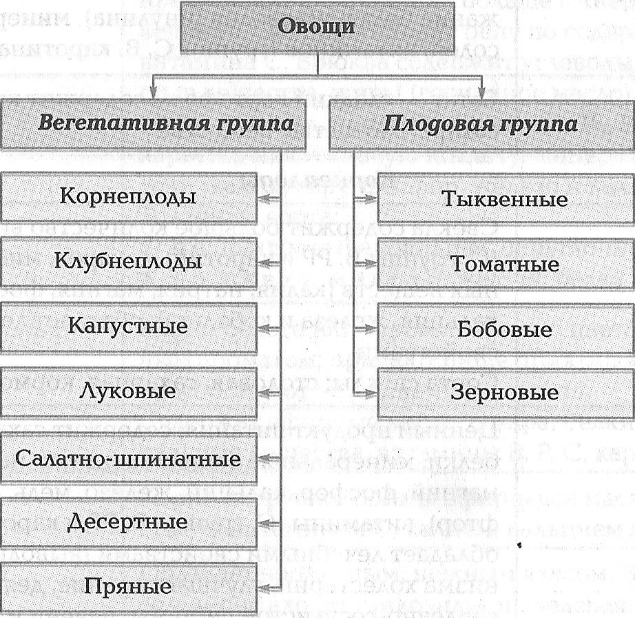
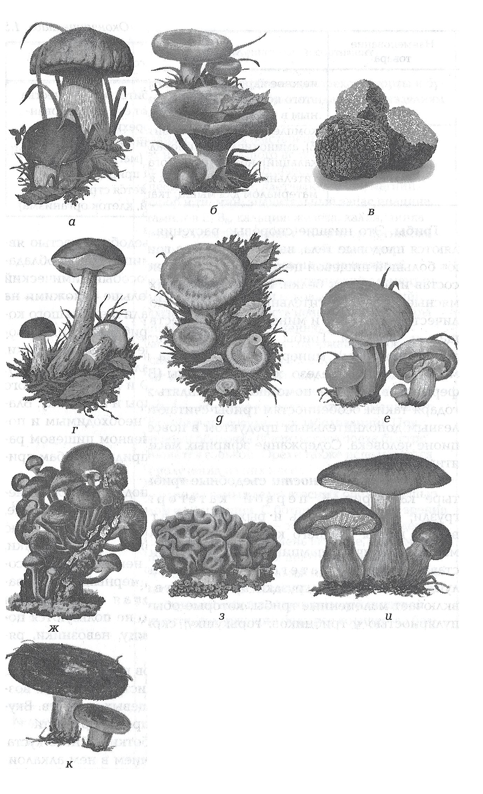
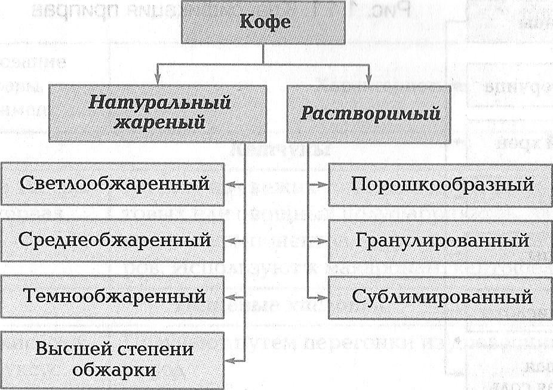

1.2.2. Ассортимент и характеристика основных видов продовольственных товаров
Ассортимент товаров — это совокупность товаров, объединенных по какому-либо признаку.
Зерномучные товары и хлебные изделия. В табл. 1.3 приведены ассортимент и характеристика зерномучных товаров и хлебных изделий.
| Наименование товара | Характеристика. Ассортимент | Крупа |
|---|---|
| Манная | Мучнистая непрозрачная мелкая крупка, получается при помоле зерна пшеницы в муку. Марки крупы:
|
| Пшеничная | Целое или дробленое зашлифованное ядро твердой пшеницы разного размера. Разновидности крупы:
|
| Овсяная | Целые или надколотые ядра гречихи, кремового цвета, отделенные от плодовых оболочек. Крупа имеет высокую биологическую ценность (в белках преобладают альбумины и глобулины, содержащие все незаменимые аминокислоты). Разновидности крупы:
|
| Пшено | Ядро проса, освобожденное от пленок и оболочек, желтого цвета. Пшено содержит много крахмала, сахара, клетчатку, белок (быстро разваривается) |
| Рисовая | Получают из ядер риса; крупа белого цвета. Разновидности:
|
| Перловая, ячневая | Цельные, крупнодробленые, шлифованные и мелкодробленые ядра ячменя, освобожденные от пленок |
| Кукурузная | Дробленые частицы ядра кукурузы. Крупа содержит мало белков и витаминов, но достаточно каротиноидов, иниацина и крахмала. Не вызывает аллергической реакции, хорошо усваивается, улучшает пищеварение, повышает иммунитет. Разновидности крупы:
|
| Горох | Шелушенный полированный горох с неразделенными семядолями. Горох имеет высокую пищевую ценность: содержит полноценные белки, сахара, крахмал. Разновидности гороха:
|
| Фасоль, чечевица, нут | Используют без предварительной подготовки. Разновидности фасоли:
|
Мука |
| Пшеничная | Вырабатывается из пшеницы, имеет разную степень помола. Тип муки:
|
| Ржаная | Вырабатывается из ржи. Имеет разную степень помола, не образует клейковину, содержит больше белков, чем пшеничная., Товарные сорта: сеяная, обдирная, обойная |
| Ячменная | Вырабатывается из ячменя, используют для производства национальных видов хлебобулочных изделий Товарные сорта: сеяная, обдирная, обойная |
| Соевая | Вырабатывают из сои. Товарные сорта:
|
| Кукурузная | Используют в хлебопечении в качестве добавок. Товарные сорта:
|
Хлебобулочные изделия |
| Хлеб | Хлебные изделия подразделяют:
|
| Булочные изделия | Батоны — булочные изделия продолговатой формы с надрезом на поверхности:
|
| Сдобные изделия | Получают из муки высшего или 1-го сорта. В рецептуру входит большое количество жира, сахара, яиц. Для улучшения вкуса и аромата добавляют ванилин, повидло, изюм. Ассортимент: булочка сдобная, витушка сдобная с творогом, плюшка «Московская» и др. |
| Бараночные изделия | Изделия округлой или овальной формы с глянцевой поверхностью. Ассортимент: баранки (из муки 1-го сорта), сушки (из муки высшего сорта), бублики (из муки 1-го сорта) |
| Сухари, соломка, палочки хлебные и хлебцы хрустящие | Сухари вырабатывают из муки высшего или 1-ого сорта с добавлением яиц, сахара. Имеют полуовальную форму. Ассортимент: сдобные пшеничные, простые, армейские. Соломка — тонкие длинные палочки округлой формы (из муки высшего или 1-го сорта с добавлением сахара, жира). Палочки хлебные (из муки высшего или 1-го сорта с добавлением сахара, жира, растительного масла). Имеют округлую форму. Хлебцы хрустящие — сухие, легкие, хрупкие пластинки. Имеют невысокую влажность, поэтому долго сохраняются. Ассортимент: хлебцы простые (из ржаной муки); соленые (к пиву); десертные (из ржаной муки сеяной и пшеничной 1 -го сорта с добавлением сахара и коровьего масла) |
Макаронные изделия |
| Макароны, вермишель и лапша | Макаронные изделия — пищевой продукт, изготовленный путем высушивания пшеничного теста. Имеют высокую пищевую ценность (содержат белки и углеводы), хорошую усвояемость. Классификация макаронных изделий в зависимости от сорта муки:
Изделия имеют желтоватый цвет, должны быть без привкуса горечи и запаха |
Овощные товары и грибы. В зависимости от части растения, используемой в пищу, овощи подразделяют на группы (рис. 1.7):
- вегетативная — в пищу используют клубни, корни, листья и стебли;
- плодовая — в пищу используют плоды и семена растений.
рис. 1.7

В табл. 1.4 представлена характеристика овощных товаров и грибов.
| Наименование товара | Характеристика. Ассортимент | Клубнеплоды |
|---|---|
| Картофель | Содержат все необходимые организму вещества: белок (полноценный), жиры, магний, цинк, железо, витамины В, С, D, Е, К, РР, каротин. Является источником углеводов (крахмала) и клетчатки. Сорта картофеля:
|
| Топинамбур | Топинамбур — земляная груша; высокое содержание белка, углеводов (инулина), минеральных солей, витаминов (группы С, В, каротина) |
| Батат | Батат — сладкий картофель; содержит крахмал, сахара, азотистые вещества | Корнеплоды |
| Свекла | Свекла содержит большое количество витаминов (С, группы В, РР и каротин), сахаров, минеральных веществ (калия, натрия, магния, фосфора, кальция, железа и кобальта); обладает лечебными свойствами. Сорта свеклы: столовая, сахарная, кормовая |
| Морковь | Ценный продукт питания; содержит сахара, белки, минеральные вещества (калий, натрий, магний, фосфор, кальций, железо, медь, йод, фтор), витамины (С, группы В, РР и каротин), обладает лечебными свойствами (выводит из организма холестерин, улучшает зрение, деятельность сердечно-сосудистой системы, печени и желудка) Товарные сорта моркови: отборная, обыкновенная |
| Редис | Самый ранний среди овощей вкусовой продукт. Содержит витамин С, минеральные вещества (калий, железо), гликозиды, эфирные масла. Товарные сорта редиса:
|
| Редька | Имеет специфический запах и горьковато-сладкий вкус. Содержит эфирные масла, гликозиды, калий Товарные сорта редьки:
|
| Репа | Имеет специфический вкус. Содержит гликозиды, сахар, витамины (группы В, С и РР, каротин), минеральные вещества (калий, натрий, кальций, магний, фосфор и железо). Товарные сорта репы:
|
| Брюква | Во многом сходна с репой, но по питательности превосходит ее. В брюкве больше минеральных веществ, она превосходит репу по содержанию витамина С. Брюква содержит углеводы, азотистые вещества, жиры (горчичное масло), клетчатку, крахмал, пектины, витамины В1, В2, Р и С, каротин, никотиновую кислоту, минеральные соли (калий, серу, фосфор, железо и кальций). Товарные сорта:
|
| Белые коренья | Корни белого или серовато-белого цвета с сильным ароматом; придают пище приятный аромат, способствуют ее лучшему усвоению. Содержат эфирные масла, сахара, белки, минеральные вещества, витамины В, Р, С, каротин |
| Петрушка | Корни петрушки богаты эфирными маслами, а листья — витамином С, калием, кальцием и магнием |
| Сельдерей | Обладает ароматным, нежным вкусом. В состав сельдерея входят гликозиды, щавелевая кислота, витамины, минеральные соли |
| Пастернак | Содержит сахара, эфирные масла, калий |
| Хрен | Имеет горьковато-острый вкус. Жгучий вкус и запах обусловлены аллиловым горчичным маслом, в нем много витамина С, белков |
| Катран | Корень цилиндрической формы, по вкусу напоминает хрен. Товарные сорта:
|
Капустные овощи |
| К капустным овощам относят капусту бело- и краснокочанную, савойскую, цветную и брюссельскую, китайскую и кейл, кольраби и брокколи. Пищевая ценность определяется содержанием сахаров, минеральных веществ (калия, кальция, фосфора, натрия, магния, железа), белков. В состав белков капусты входит сера, которая обусловливает запах сероводорода при тепловой обработке капустных овощей. Они являются источниками витаминов B1 В2, РР, С, Е, фолиевой кислоты, снижающей количество холестерина в организме, холина, имеющего антисклеротическое действие. В белокочанной капусте найден витамин U, используемый при лечении язвенных болезней желудка | |
| Белокочанная капуста | Содержит тартроновую кислоту (задерживает превращение углеводов в жир), сахара (глюкозу и фруктозу), клетчатку, белки, минеральные вещества (соли калия и фосфора) и витамины. Товарные сорта:
|
| Краснокочанная капуста | По вкусовым, питательным и целебным качествам превосходит белокочанную капусту. Содержит больше витаминов и сахаров. Цвет листьев (фиолетово-красный) обусловлен наличием красящего вещества — антоциана |
| Цветная капуста | Является одной из самых ценных по питательности и вкусовым качествам капустных овощей. Содержит полноценные белки, богата сахарами, витаминами (группы В, К и Р), минеральными веществами (солями калия, фосфора, кальция, магния). Используется в диетическом питании: понижает артериальное давление, улучшает пищеварение, нормализует деятельность кишечника, способствует выведению холестерина |
| Брюссельская капуста | Это многокочанная капуста. Отличается повышенным содержанием белков, витаминов (группы В, С, РР и каротина), углеводов, минеральных веществ (калия и фосфора). Сок брюссельской капусты полезен больным сахарным диабетом, страдающим сердечно-сосудистыми заболеваниями, полезен больным, перенесшим хирургические операции |
| Кольраби | Утолщенный стебель, по вкусу напоминает кочерыгу белокочанной капусты, но более нежный, сладкий и сочный. Это ценный диетический продукт. Содержит повышенное количество белков, углеводов, фосфора, железа, витамины (В1, В2 и РР), соли калия, глюкозу, фруктозу, соединения серы. По содержанию витамина С кольраби сравнима с лимоном и апельсином, поэтому ее иногда называют северным лимоном. В народной медицине применяется при нарушениях функций печени, желчного пузыря и желудочно-кишечного тракта |
| Брокколи | Брокколи поистине можно сравнить с золотой жилой. В припущенном виде она содержит витамина С больше, чем такое же количество апельсинов, а кальция — столько же, сколько содержится в одном стакане молока. Один зрелый побег брокколи среднего размера (около 200 г) содержит в 3 раза больше клетчатки по сравнению с куском отрубного хлеба. Брокколи также — один из богатейших источников витамина А среди овощей. Особая же ценность состоит в ее противораковой защите |
| Пекинская капуста | Ценный диетический овощ. Показана людям с заболеваниями сердечно-сосудистой системы и желудочно-кишечного тракта. Она содержит большое количество витаминов С, РР, U, группы В, солей калия, кальция, фосфора, магния, железа и натрия. Кочанная пекинская капуста классифицируется по форме кочана: на овальную, цилиндрическую, сдавленную |
| Пак-чой | Мясистый овощ со свежим, нежным и горьковатым вкусом, напоминающим смесь салата мангольд и шпината. По питательной ценности пак-чой близка к белокочанной капусте. Ценится за высокое содержание аминокислоты лизина, отвечающей за очищение крови. Характеризуется высоким содержанием витамина С, бета каротина, фолиевой кислоты и кальция |
| Китайская капуста | Очень ценный овощ, содержащий много витаминов и минеральных солей. Нормализует обмен веществ в организме человека, улучшает пищеварение. Сок используют при лечении длительно не заживающих ран, язв, при ожогах. Этот овощ особенно ценится как витаминный продукт в борьбе с анемией. Вместе с клетчаткой китайской капусты из организма выводится холестерин, что играет большую роль в профилактике атеросклероза. Ее используют для диетического питания при сердечно-сосудистых заболеваниях, язве желудка. Китайская капуста содержит незаменимую аминокислоту лизин, которая обладает способностью растворять чужеродные белки, попадающие в кровь человека, и служит основным очистителем крови от вредных микроорганизмов. По белковому составу китайская капуста сходна с капустой пекинской и капустой полевой (сурепицей). Главное отличие китайской капусты от пекинской — более грубые и неопушенные листья. В листьях китайской капусты содержатся белок (как в цветной капусте), очень много аскорбиновой кислоты, а каротина и витамина Р больше, чем в любом другом капустном овоще. Эта капуста отличается высоким содержанием железа и других микроэлементов |
| Савойская капуста | Рыхлый кочан с морщинистыми и гофрированными листьями разных оттенков зеленого цвета. Обладает приятным вкусом и нежной зеленью листьев. Легко усваивается организмом и используется для диетического и детского питания. Содержит больше, чем белокочанная, азотистых и минеральных веществ и витамина С | Луковые |
| Луковые овощи имеют не только пищевое, но и лечебное значение. Содержат фитонциды, обладающие антибактериальными свойствами, эфирные масла, гликозиды, способствующие усвоению пищи, используют в свежем виде, применяют как приправу к разным блюдам | |
| Лук репчатый | Отличается острым вкусом, своеобразным запахом и обладает целебными свойствами, так как содержит особые вещества — фитонциды, убивающие болезнетворные бактерии. В луковицах содержится много легко усвояемых человеческим организмом растительных белков, около 10% сахаристых веществ, разнообразные витамины и азотистые соединения. Значительное количество минеральных солей в луке при его употреблении в пищу способствует нормализации водно-солевого обмена в организме, а своеобразный запах и острый вкус возбуждают аппетит. Товарные сорта:
|
| Лук-шалот | Разновидность репчатого лука; луковицы небольшие по размеру, окраска — от белой до фиолетовой. Лечебные свойства лука: стимулирует пищеварение и благоприятно влияет на микрофлору кишечника, оказывает мочегонное, бактерицидное и антигельминтное действие, успокаивает нервную систему, расширяет кровеносные сосуды, улучшает кровообращение и обмен веществ, укрепляет костную ткань, уменьшает содержание холестерина в крови |
| Лук зеленый | Перо мелкого репчатого лука — это источник калия, кальция, витамина С (при потреблении 80— 100 г зеленого лука можно полностью удовлетворить суточную потребность организма в витамине С) |
| Лук-порей | Имеет нежный, приятный сладковатый вкус, является диетическим продуктом, у лука совершенно отсутствуют запах и острота. Порей содержит больше белка, чем репчатый лук. Его характерный запах обусловлен присутствием эфирных масел, содержащих серу. В 100 г свежей массы содержится приблизительно 3 мг масел. Среди них преобладают дисульфиды и полисульфиды, как и в чесноке. Порей содержит сахара, протеин, кальций, фосфор, железо, калий, натрий, магний, каротин, витамины В1, В2, РР и С. Витамин В2 содержится в большом количестве |
| Лук-батун | Растение с большой массой зелени, имеет острый вкус, содержит много витамина С и фитонцидов, обладающих антимикробными свойствами. Зеленые листья заквашивают подобно капусте, при этом получается хорошая приправа, сохранившая все витамины, вкус и аромат. В свежем виде является отличным тонизирующим средством |
| Шнитт-лук | Растение небольших размеров с приятным ароматом. В отличие от репчатого лука шнитт-лук (его еще называют «лук-резанец») не образует луковицы, содержит очень много аскорбиновой кислоты, флавоны, каротин, растительные антисептики — фитонциды, эфирные масла, полезные для человека минеральные соединения, белки и углеводы |
| Лук-слизун | Имеет плоские сочные листья, приятный слабо острый вкус, чесночный запах. Листья слизуна богаты витаминами и различными солями, особенно железом (полезны при малокровии). Благодаря сочности листьев его используют как приправу к различным блюдам |
| Чеснок | Содержит азотистые вещества, натрий, калий, кальций, магний, кремниевую, серную, фосфорную кислоту, витамины С, D и В, фитостерины, экстрактивные вещества, фитонциды и эфирные масла. Благодаря своему богатому и лечебному составу чеснок обладает мочегонными и потогонными свойствами; способен понижать артериальное давление, а также оказывает обезболивающее, ранозаживляющее, противомикробное, противоглистное, антитоксическое, препятствующее онкообразованиям действие. Полезные свойства чеснока способствуют борьбе и с авитаминозами. Также в нем содержится селен, который известен антиоксидантными свойствами. Чеснок разжижает кровь и является натуральным антибиотиком; укрепляет иммунную систему, убивает бактерии | Салатно-шпинатные овощи |
| Салат | Салаты малокалорийны, содержат большое количество азотистых, минеральных веществ (железо, фосфор, кальций, йод) и витамины группы В, РР, каротин, а витамина С в них почти столько же, сколько и в яблоках. Кроме того, в салате содержится больше, чем в других овощах, витаминов Е и К. В соке салата присутствует гликозид лактуцин, который успокаивает нервную систему, оказывает легкое снотворное действие, улучшает сон. Благодаря удачному соотношению солей калия и натрия салат благотворно действует на печень, почки, поджелудочную железу и сердечно-сосудистую систему, регулирует водный обмен в организме. Его включают в лечебно-диетическое питание при атеросклерозе, сахарном диабете, язве желудка, гипертонии. Листья салата содержат клетчатку и очень малое количество калорий, поэтому их рекомендуют для улучшения обмена веществ и тем, кто хочет похудеть. В пищу используют молодые сочные листья., Товарные сорта салата:
|
| Кресс-салат | Его светло-зеленые листья очень нежные, богатые витаминами и минеральными солями (железом, калием, фосфором). В кресс-салате содержится горчичное масло, которое и придает ему остротерпкий вкус и специфический аромат, напоминающий хрен или редьку. Сок используют как мочегонное средство, он улучшает пищеварение и сон |
| Горчица | Листовая салатная горчица образует большую розетку листьев; имеет горчичный вкус, отличается высоким содержанием витаминов (каротина, аскорбиновой кислоты, рутина, витаминов группы В, РР, особенно много витамина С), кальция и железа. Горчица полезна при малокровии и авитаминозе |
| Шпинат | Состоит из мясистых, сочных листьев, собранных в розетку. В листьях шпината содержатся витамины С, D, К и группы В. Шпинат характеризуется высоким содержанием белков, усвояемых солей железа и кальция. В нем наряду с многими полезными для организма веществами содержится секретин, благотворно действующий на работу желудка и поджелудочной железы. Применяют при заболевании крови, нервном истощении, рахите, цинге, малокровии, туберкулезе, сахарном диабете. Используют в детском питании |
| Щавель | Растение со слабокислым вкусом, ценится как ранний овощ. Имеет мясистый стержневой корень. Листья матовые, зеленые. В пищу употребляют прикорневые листья щавеля, когда они достигнут длины 10—12 см. В листьях содержится большое количество витаминов С, А, В2 и РР, минеральные соли железа, калия, органические кислоты — лимонная, яблочная, щавелевая. В молодых листьях щавеля преобладают яблочная и лимонная кислоты и мало щавелевой, содержится много витаминов. По мере старения листьев количество их снижается. В старых листьях, когда начинают образовываться цветоносные стебли, накапливается щавелевая кислота, которая нежелательна для человека, например, при почечно-каменной болезни | Десертные |
| Созревают раньше других овощей, обладают нежным специфическим вкусом; являются источником витамина С; используют как десерт | |
| Ревень | Многолетнее растение в виде лопуха. В пищу используют молодые мясистые черешки листьев овощного ревеня, собранные ранней весной. Осенний ревень грубее и содержит много щавелевой кислоты. В ревене имеется также яблочная кислота, придающая ему приятный кислый вкус, пектиновые вещества, витамины С, Р, РР и В2, каротин |
| Спаржа | Молодые, еще не показавшиеся из-под земли побеги бело-розового цвета; обладают сладковатыми нежными вкусом и запахом благодаря содержанию сахаров, белков, минеральных веществ (натрия, калия, фосфора, железа) |
| Артишок | Цветы многолетнего растения, которые собирают до начала полного цветения. Съедобными частями такого цветка являются мясистое цветоложе и основание мясистых чешуй-лепестков. Артишоки содержат сахара, минеральные вещества, белки, благодаря чему обладают высокими пищевкусовыми свойствами и ценятся как диетический продукт | Пряные |
| Обладают своеобразным приятным вкусом и ароматом, содержат эфирные масла, витамин С, минеральные вещества. Используют как приправу в приготовлении блюд и консервировании овощей | |
| Укроп | Употребляют в виде молодой зелени как приправу к салатам, супам, различным вторым блюдам. Укроп в стадии цветения и зрелый используют при посоле и мариновании овощей |
| Эстрагон | Это многолетнее растение с анисовым запахом. Его листья и молодые стебли используют для салатов, при солении, мариновании овощей и как приправу к мясным и рыбным блюдам |
| Майоран | Многолетнее растение. Используется для ароматизации чая, уксуса, при засоле огурцов, помидоров и для приготовления различных национальных блюд |
| Кориандр(кинза) | Однолетнее растение, листья которого используют как приправу к овощным и мясным блюдам, обладает приятным запахом |
| Чабер | Однолетнее растение, обладает сильным приятным запахом. Применяется в качестве приправы к салатам, мясу, рыбе, грибам, а также при мариновании и засоле огурцов |
| Базилик | Травянистое растение. Имеет приятный перечный, мятный или лимонный аромат. Используется как приправа к мясным, овощным и рыбным блюдам |
| Фенхель | Растение, внизу которого находится белое круглое образование в виде кочанчика с толстыми круглого сечения стеблями со сложно-перистыми листьями и цветами, собранными в зонтик. На вкус фенхель сладковатый с запахом аниса. Содержит сахара, белки, много витамина С, эфирные масла, минеральные вещества (К, Са, Р, Fe). Используют фенхель как приправу к салатам, мясным блюдам. Разрезанный на две части кочанчик можно фаршировать овощами, мясом с рисом | Тыквенные |
| Тыквенные овощи отличаются низкой калорийностью, однако обладают хорошим вкусом, диетическими и лечебными свойствами. Содержат большое количество сахаров, витаминов, минеральных веществ | Бахчевые культуры |
| Арбуз | Отличается высокими вкусовыми достоинствами, так как содержит много сахаров, из которых преобладает фруктоза, и ароматических веществ. Лечебные свойства арбуза обусловлены содержанием витаминов В1, В6, РР и С, биотина, фолиевой кислоты, инозита, калия и других минеральных веществ. Родина арбузов — Южная Африка, в начале новой эры арбуз появился в Древнем Риме, а затем в Китае. В России арбуз получил широкое распространение в XIX в. Товарные сорта:
|
| Дыни | Дыни — более теплолюбивые, чем арбузы. Родиной дыни считаются Средняя и Малая Азия. Европейцам она была известна уже в древние времена, а в Россию дыни были впервые завезены в XVII в. из Англии, где их выращивали в парниках. Плоды дыни содержат сахара, минеральные вещества, витамины (С, РР и В), каротин, ароматические вещества. Они имеют приятный вкус, аромат и их используют в свежем виде, для вяления, приготовления цукатов, а также варенья. Окраска мякоти может быть белая, желтая, зеленоватая, оранжевая; консистенция — сочная, тающая, хрустящая, рассыпчатая, плотная; запах — дынный, ванильный, грушевый, травянистый. Товарные сорта:
|
| Тыквы | Крупные, мясистые плоды. Столовая тыква содержит сахара, белки, минеральные вещества, каротин, витамин С, пектиновые вещества, способна дозревать при хранении. Родиной съедобной тыквы является Америка, а в России тыква известна с XVI в. Товарные сорта:
|
| Мелкоплодные: | |
| Чайот | Мексиканский огурец, имеет плоды грушевидной формы с очень твердой мякотью, плоды окрашены в интенсивный зеленый цвет и в отличие от других тыквенных содержат одно крупное семя. Содержит полноценные растительные белки, витамины С и группы В. В кулинарии используют для приготовления салатов, супов-пюре и других блюд |
| Яичная тыква | Имеет плоды зеленого цвета, часто с полосками, по вкусу похожа на кабачки-цуккини (ее можно готовить так же, как и цуккини, пока она еще мелкая). Более крупные яичные тыквы режут пополам, удаляют из них семена, фаршируют и запекают |
| Момордика | Бальзамическая груша, желтый огурец, или горькая тыква, родом из стран Африки, Южной Америки. Зеленцы — типичные «крокодильчики», достигают 10—12 см; при созревании становятся оранжевыми. В Индии из момордики готовят знаменитую приправу карри. По вкусу ягоды напоминают очень горький огурец, в них содержится много йода, калия. Используется как лекарственное, пищевое и декоративное растение. Семена плодов хорошо лечат язвенную болезнь. Кроме того, в медицине момордику используют для лечения сахарного диабета, гипертонии. Сок листьев помогает при укусах насекомых. Кожуру (она напоминает банановую, только покрыта шипами) настаивают на водке и используют для лечения радикулита, растирания ног. Готовят его так же, как кабачок: варят, тушат с другими овощами |
| Кабачки | Кабачки и патиссоны — кустовые тыквы. Кабачки — плоды удлиненной формы, с нежной мякотью. В пищу используют недозрелые молодые плоды (3— 10-дневной завязи) для приготовления икры, фарширования, тушения и жарки, маринования |
| Патиссоны | Имеют тареловидную форму с зубчатыми краями, молочно-белую окраску. Молодые плоды патиссонов (3—5-дневной завязи) отличаются приятным вкусом грибов с нежным хрустом и мелкими семенами. Требования к качеству: плоды должны быть свежими, здоровыми, с плотной мякотью, без пустот, с недоразвитыми семенами. Их используют в вареном, жареном или маринованном виде, для консервирования. В лечебном питании их рекомендуют при желудочно-кишечных заболеваниях, болезнях сердца, тучности |
| Огурцы | Содержат мало питательных веществ (до 5 %), половина из которых приходится на долю сахаров. Огурцы богаты калием, железом, фосфором; из витаминов в них содержатся С, В, В2, РР и др. Гликозид кукурбитацин придает огурцам горький вкус. Родиной огурцов считают Индию, где их употребляли в пищу 3 тыс. лет назад до нашей эры. Их знали древние египтяне и римляне, о чем свидетельствуют изображения на памятниках. Во времена Гомера в Греции существовал город Сикион, т. е. город огурцов. В Россию огурцы были завезены из Византии. В пищу используют плоды огурцов в недозрелом виде (в стадии зеленца), с нежной, плотной мякотью, зеленой кожицей и некожистыми семенами. При созревании кожица и мякоть грубеют, а семенные камеры становятся водянистыми, кислыми на вкус. Товарные сорта:
В кулинарии ценятся огурцы зеленого цвета, с плотной мякотью, мелкими водянистыми семенами, без горечи. Их используют в свежем виде для салатов, на гарнир к различным блюдам, а также солят и маринуют. В лечебном питании огурцы применяют для нормализации работы кишечника и рекомендуют тучным людям как малокалорийные овощи |
Томатные |
| Обладают высокой пищевой ценностью, содержат минеральные вещества, пектиновые вещества, органические кислоты, витамины | |
| Томаты | Плод — ягода, которая состоит из кожицы, тонкого подкожного слоя мякоти и сочных семенных камер, в которых расположены семена, окруженные студенистой массой (наиболее ценными являются плоды с меньшим числом камер и толстыми мясистыми перегородками). Родина томатов — Южная Америка. Испанцы завезли помидоры в Европу как декоративное, ядовитое растение, выращивали его в теплицах как украшение. Однако уже в конце XVII в. томаты начала использовать знать. Зрелые плоды томата богаты сахарами и витамином С, в большом количестве содержат белки, крахмал, органические кислоты, клетчатку и пектиновые вещества, минеральные вещества (кальций, натрий, магний, железо, хлор, фосфор, серу, кремний, йод), а также каротиноиды — каротин и ликопин (определяют желто-оранжевый или красный цвет плодов), витамины группы В, никотиновую и фолиевую кислоты, витамин К. Томаты полезны при сердечно-сосудистых заболеваниях (благодаря большому содержанию железа и калия), при гастритах с пониженной кислотностью, общем упадке сил, ослаблении памяти, малокровии, способствуют снижению холестерина (благодаря повышенному содержанию пектиновых веществ), регулируют обменные процессы и деятельность желудочно-кишечного тракта (за счет высокого содержания биологически активных веществ), усиливают работу почек и половых желез. Товарные сорта:
|
| Перец | Стручок или мясистая 2 — 3-гнездная многосемянная ягода, разной величины, формы, окраски. Перец подразделяют на две группы: овощной (сладкий) и горький (острый). Родина перца — Мексика. В Европе он стал известен только после открытия Америки и быстро распространился по всему миру. Сладкий перец используют в кулинарии, консервной промышленности, солят, маринуют, горький — применяют как пряно-ароматическое растение, пряность. Перец содержит сахара, органические кислоты (яблочную, лимонную, щавелевую), флавоноиды (обладающие капилляроукрепляющим действием). Окраска обусловлена хлорофиллом и каротиноидами (капсаитином, р-каротином). Аромат обусловлен наличием эфирного масла. Специфический вкус как острого, так и сладкого перца обусловлен фенольными соединениями (капсаицином). Перец возбуждает аппетит, усиливает отделение желудочного сока, входит в состав перцового пластыря, мази при отморожениях. Перец овощной — ценная витаминная культура, содержание витамина С достигает 400 мг%. При созревании содержание витамина С увеличивается. Следует отметить высокое содержание витамина Е, никотиновой, фолиевой кислот, железа и цинка. Перец используют как витаминное средство, при упадке сил, он улучшает аппетит, пищеварение, способствует отделению желчи. Товарные сорта сладкого перца:
|
| Баклажаны | Недозрелые плоды однолетнего теплолюбивого растения. Баклажан имеет давнюю историю. Впервые был замечен воинами Александра Македонского во время военных походов в Персию и Индию в 331 —325 гг. до н. э. Родина дикого баклажана, от которого произошли известные культурные сорта, находится в Индии и Бирме. В Европу баклажан попал намного позднее — во время арабской экспансии, когда мусульмане охотно делились с европейцами своими культурными достижениями, включая кулинарию. В России баклажаны появились в XVII в. Вероятно, к нам они попали из Турции или Персии благодаря казакам, совершавшим постоянные набеги в тех краях. В пищу употребляют закончившие рост, но физиологически незрелые плоды. Перезревшие плоды становятся грубыми, а очень молодые — малосахаристые и невкусные. Баклажаны употребляют в жареном или отварном виде, маринуют, солят, консервируют. Баклажаны содержат большое количество сахаров (глюкозы, фруктозы, сахарозы), органических кислот (лимонной, яблочной), пектиновых веществ, минеральных веществ (по содержанию калия превосходят капусту белокочанную, лук репчатый и ряд других культур), микроэлементов (алюминия, марганца, цинка, меди, железа), фенольных соединений (капилляроукрепляющего и противосклеротического действия). Содержание крахмала составляет 0,9 %, клетчатки — 1,3 %. Горький вкус обусловлен гликозидом — соланином (при перезревании количество соланина повышается). Баклажаны содержат витамин С, фолиевую кислоту (нормализующую процессы образования тромбоцитов, эритроцитов, лейкоцитов). Антоцианы (дельфиниды и его производные) обладают сосудоукрепляющим, противовоспалительным действием. Систематическое употребление баклажанов способствует выведению холестерина из организма. Товарные сорта баклажан:
|
| Физалис | Изумрудная ягода, или земляная клюква, мясистая, желто-зеленого или ярко-желтого цвета, по строению близкая к помидору. Плод смазан клейким веществом и находится внутри сильно разросшейся цветочной чашечки — чехлика, который в состоянии зрелости раскрывается. Родина физалиса — Мексика, Гватемала, где он растет в диком виде. В культуре распространены два вида физалиса съедобного — мексиканский и земляничный. Плоды физалиса, особенно земляничного, сладкие на вкус, с земляничным ароматом. Окраска плода мексиканского — от желтой до фиолетовой, земляничного — желто-оранжевая. Ягоды физалиса содержат большое количество углеводов, лимонной кислоты, витамина С, белковых, пектиновых и дубильных веществ. Физалис — это также источник витаминов А, группы В, протеина и фосфата. Полезен для зрения, помогает при инфекционных заболеваниях полости рта и горла, рекомендуется диабетикам. В китайской медицине физалис используют для лечения кашля, жара, боли в горле. Свежие плоды, а также отвары из сушеных ягод употребляют как мочегонное средство при водянке, подагре, суставном ревматизме, камнях в почках и мочевом пузыре. Кроме того, физалис выводит из организма тяжелые металлы. В кулинарии используют для десерта, в салатах, их солят и маринуют, как томаты, из них готовят икру, пюре, приправы, джемы, варенья, цукаты, их добавляют в борщи, соусы. Перед использованием физалис бланшируют (обдают кипятком), чтобы смыть с поверхности клейкие и воскообразные вещества. Если их не удалить, то приготовленные изделия будут иметь неприятные привкус и запах |
| Бамия | Однолетнее растение семейства мальвовых. Окра, бамия, гомбо, гумбо, куйабо, бхинди — разные названия малораспространенной у нас овощной культуры, уроженки тропических районов Северной Африки. Ее культивируют практически во всех странах с тропическим и субтропическим климатом. Это любимый овощ арабов, турков и греков. Плод — стручок, употребляют в пищу 4—6-дневную завязь. Бамия богата полезными веществами. В ее завязях содержатся жиры, углеводы, белковые вещества, аминокислоты, аскорбиновая кислота (до 45 мг%), каротин, витамины группы В, минеральные, пектиновые и слизистые вещества, много кальция, железа. В семенах содержится до 20 % масла, не уступающего по качеству оливковому. Бамия — прекрасное дополнение к острым мясным блюдам, особенно из птицы, отличная приправа к соусам (широко применяется в закавказской и балканской кухнях). В домашней кулинарии из молодых стручков бамии готовят салаты, гарниры, супы, подают их вареными и поджаренными к мясу. Бамию также сушат, маринуют, консервируют. Молодые зеленые семена варят и употребляют как зеленый горошек. Из зрелых обжаренных семян готовят суррогат кофе — вкусный напиток «Гомбо». Завязи и молодые листья растения можно употреблять сырыми или готовить из них салаты |
Бобовые овощи |
| Бобовые дают ценный пищевой продукт, богатый белками, и в значительной степени могут заменить мясо. Они богаты сахарами, крахмалом, витаминами. Калорийность бобовых выше других овощей. В пищу используются недозрелые (в стадии молочно-восковой и восковой зрелости — семена), а у сахарных сортов гороха и фасоли и сочные створки боба | |
| Горох | Растение холодостойкое. Его начали возделывать еще в каменном веке. Родиной гороха считается Юго-Западная Азия. Для древних китайцев горох был символом богатства и плодородия. Точно неизвестно, когда начали выращивать и употреблять в пищу плоды этого растения в нашей стране. В Русский Правде (сборнике законов времен Киевской Руси), составленной в XI в., горох упоминается наряду с рожью, просом, пшеницей и овсом. По устройству боба горох подразделяют на две группы: сахарную и лущильную. У лущильного гороха внутренняя сторона створки боба имеет пергаментный слой, у сахарного гороха этого слоя нет. У лущильного гороха используется только зерно, сахарного — зерно и лопатка в зеленом виде |
| Фасоль | Фасоль — распространенный продукт питания с античных времен. В России стала известна в XVII в. Овощная фасоль в отличие от полевой имеет нежные, мясистые стенки плодов, без грубых волокон на швах. Фасоль — высокобелковая культура (по химическому составу и биологической ценности белки подобны белкам животного происхождения, приравниваются к белкам диетических куриных яиц). Фасоль содержит большое количество незаменимых аминокислот, углеводов (глюкозы, фруктозы, сахарозы, мальтозы, стахиозы, крахмала и клетчатки). В ней немало органических кислот (яблочной, лимонной, малоновой), каротина, витаминов С, В1, В2, В6 и РР, фолиевой кислоты. Фасоль считают ценным источником витамина Е, минеральных веществ (калия, фосфора, цинка, железа, меди и др.). По содержанию меди и цинка фасоль опережает большинство овощей. Как известно, цинк участвует в синтезе некоторых ферментов, инсулина и гормонов. Вот почему фасоль занимает существенное место в диетическом лечении. Фасоль известна как лечебный продукт. Ее используют в народной и традиционной медицине для лечения сахарного диабета, воспалительных заболеваний почек и мочевого пузыря, мочекаменной болезни. Бобы крупные, мясистые, в полной зрелости — бурые, кожистые. Семена крупные, черно-бурые |
| Соя | Соя — род растений семейства Бобовые. Родиной сои является Восточная Азия. Большинство видов сои — многолетние вьющиеся растения, распространенные в тропиках и субтропиках от Африки, Южной Азии и Австралии до Океании. Однако когда речь идет о сое, то обычно подразумевают наиболее известный вид — сою культурную. Семена культурной сои, иногда называемые «соевыми бобами», — широко распространенный продукт питания, известный еще в третьем тысячелетии до н. э. Сою часто называют «чудо-растением» — отчасти благодаря высокому содержанию растительного белка, в среднем составляющему около 40 % от массы семени, а у отдельных сортов достигающему 48—50 %, во многом аналогичном животному, отчасти благодаря сравнительно высокой урожайности. Соя имеет широкий спектр применения в кулинарии: ее используют как основной заменитель мяса, из сои готовят многочисленные соевые продукты и напитки. К основным соевым продуктам относят соевую муку, разнообразные соусы, соевое мясо, сыр (тофу), сладости и даже молоко и масло |
| Бобы | Однолетнее растение, содержит много белка, витаминов. В пищу употребляют зеленые плоды, недозревшие (овощные сорта) и спелые семена. Очень вкусны семена молочной спелости. Их едят в сыром виде, добавляют в супы, салаты. Зрелые семена улучшают вкус первых блюд, особенно зеленых щей, и щей из кислой капусты. Бобы — самая древняя культура из известных человечеству. Семена бобов были обнаружены в гробнице эпохи 12-й династии египетских фараонов, живших свыше 2000 лет до н. э. В Библии упоминается, что бобы возделывали в Древней Палестине за 1000 лет до н. э. Родиной бобов считаются страны Средиземноморья и Передней Азии. Их выращивали в Древней Греции, Древнем Риме, Египте. В Россию они проникли из Греции. Некоторые ученые считают даже, что бобовые были первой человеческой пищей |
| Крылатые бобы | Жители Таиланда едят эти бобы с карри-пастой в сыром виде или готовят на пару | Зерновые |
| Кукуруза | Древнейшая культура, которая была известна еще 7 тыс. лет назад как маис. Современная кукуруза мало напоминает своего прародителя, при раскопках пирамид племени Майя в Америке были найдены маленькие початки маиса. За многие века кукуруза очень изменилась благодаря стараниям селекционеров. В Европу кукурузу завезли в XVII в. После окончания Второй мировой войны для изголодавшегося народа СССР она была важнейшим продуктом питания. Из кукурузной муки пекли хлеб, лепешки, из крупы варили кукурузную кашу, початки пекли на углях. В пищу используют початки. Кукурузу консервируют, из нее делают любимое лакомство — кукурузные хлопья, палочки. Все блюда, приготовленные из этой культуры, вкусные и полезные. В кукурузе практически нет аминокислоты триптофана, являющегося предшественником не только витамина РР, но и некоторых канцерогенных веществ. Поэтому разумное включение кукурузы в рацион является фактором профилактики онкологических заболеваний и процессов старения. Пищевая ценность кукурузной крупы ниже других, поэтому она подходит для диетического питания. В кукурузной крупе содержание углеводов составляет 75 %, белка — 8 %, мало витаминов и минеральных веществ. Кукуруза способна тормозить процессы брожения и гниения в кишечнике, поэтому ее включают в диеты при энтероколитах |
Свежие плоды. Химический состав и пищевая ценность свежих плодов. Все плоды содержат большое количество воды (около 75 — 85 %). Исключение составляют орехоплодные (10—15 %). Влага в плодах находится как в свободном, так и в связанном состоянии. Свободная влага является хорошей средой для размножения гнилостных бактерий и микробов, поэтому плоды не могут долго храниться.
Плоды являются главными источниками углеводов. Это моносахара (глюкоза, сахароза), дисахара (сахароза), полисахара (клетчатка, пектиновые вещества). В химический состав плодов входят многоатомные спирты (сорбит и манит), обладающие сладким вкусом. Они содержатся в больших количествах рябины, сливе, в меньшей степени — в яблоках.
В состав плодов входят азотистые вещества — белки (наибольшее количество белков приходится на маслины (7 %), бобовые (5%), картофель (2—3%), орехоплодные), овощи являются основными поставщиками ферментов.
Классификация свежих плодов. В зависимости от строения и зоны выращивания свежие плоды подразделяют на группы (рис. 1.8). Характеристика свежих плодов приведена в табл. 1.5.
рис. 1.8
| Наименование товара | Характеристика. Ассортимент |
|---|---|
| Семечковые | |
| Семечковые плоды состоят из кожицы, плодовой мякоти, пятигнездной камеры с семенами | |
| Яблоки | Содержат большое количество сахаров, витамины В, Р, С, каротин, органические кислоты (яблочная кислота), дубильные и минеральные вещества, пектин. Используют в свежем, сушеном, консервированном виде. Товарные сорта:
|
| Груши | Плоды ценят за своеобразный вкус, приятный аромат и диетические свойства. Особая ценность груши определяется наличием биоактивных соединений (арбутин, хлорогеновая кислота, серотонин и др.), способных предупреждать или излечивать некоторые заболевания почек, воспаление мочевых путей, бактериурию. Груша богата сахарами, органическими кислотами, ферментами, клетчаткой, дубильными, азотными и пектиновыми веществами, витаминами С, В1, Р, РР, каротином (провитамин А), а также флавоноидами и фитонцидами. Груши по вкусу обычно кажутся слаще яблок, хотя сахаров в них меньше. Многие сорта груш содержат большое количество микроэлементов, в том числе йода. Основная ценность груши — в содержании питательных волокон (2,3 г на 100 г). Содержание витамина С в ней не высокое. По содержанию фолиевой кислоты груша превосходит даже черную смородину. Товарные сорта:
|
| Айва | Ценная плодовая порода, возделываемая более 4000 лет. На Кавказе, например, сады айвы существовали еще в доисторические времена. В диком виде встречается на востоке. В айве содержится провитамин А, витамины группы В, С, Е и РР, микроэлементы (калия в 10 раз больше, чем натрия). Айва отличается высоким содержанием яблочной и лимонной кислот. Немало в ней также тартроновой кислоты и пектиновых веществ. Повидло и джем из айвы полезны при воспалительных заболеваниях кишечника. Айвовый сок обладает общеукрепляющим, антисептическим, кровоостанавливающим, вяжущим и мочегонным свойствами |
Косточковые плоды |
| Косточковые плоды состоят из кожицы, сочной мякоти, скорлупы и ядра. Обладают высокими вкусовыми свойствами и пищевой ценностью. Содержат сахара, витамины, органические кислоты, минеральные вещества. Используют в свежем виде, но из-за нежной мякоти плохо перевозятся и хранятся, поэтому большая часть косточковых плодов идет на переработку | |
| Вишня | Плоды содержат сахара, органические кислоты, дубильные и пектиновые вещества, соли железа, марганца, калия, меди, кальция, йода. В зависимости от окраски сока вишню подразделяют на две группы: морели (имеют кожицу темно-вишневого цвета и окрашенный сок кисловатого вкуса) и аморели (имеют светлоокрашенные плоды с бесцветным соком, менее кислые, чем морели). Товарные сорта (по качеству):
|
| Черешня | По сравнению с вишней черешня является более теплолюбивой культурой. Плоды черешни крупнее, чем вишни, и более сладкие. По строению мякоти черешню подразделяют на две группы: бигаро (хрящевидная), гини (нежная сочная мякоть). По качеству выделяют 1-й и 2-й сорта |
| Слива | Наибольшее распространение имеют садовая (домашняя) слива, алыча, терн, тернослив. Культивируется несколько групп садовой сливы:
|
| Алыча | Плоды мелкие или средние, от зеленого до черного цвета, содержат много кислот, пектина. Используют алычу для сушки, варки варенья, приготовления пастилы, мармелада и плотного золотистого желе |
| Терн | Плоды мелкие, темно-синие, с терпким кислым вкусом. В свежем виде не употребляют, а готовят из них повидло, настойки, варенья. Товарные сорта сливы и алычи (по качеству):
|
| Абрикосы | Плоды отличаются высокой сахаристостью, значительным содержанием пектина, каротина, наличием органических кислот, ароматических и ценных минеральных веществ. Товарные сорта:
|
| Персики | Отличаются от абрикосов гармоничным сочетанием вкуса и аромата, более сочной мякотью. Классификация персиков:
|
Субтропические и тропические плоды |
| Цитрусовые | Цитрусовые плоды состоят из толстой плотной кожицы, мякоти, разделенной на дольки, и семян. В кожице плодов сосредоточены почти все эфирные масла (1,2 — 2,5 %), витамины С и Р, каротин, пектиновые вещества, гликозиды. Плоды богаты сахарами, эфирными маслами, органическими кислотами, пектиновыми и минеральными веществами, витаминами. Используют в свежем виде, для приготовления соков, желе, варенья, цукатов. Хорошо сохраняются и транспортируются |
| Лимоны | Подразделяют по вкусовым качествам на обыкновенные (кислые) — содержат 5—8 % кислот и сладкие — содержат 7—9 % сахара, такие плоды можно употреблять непосредственно в пищу. В кожице лимонов в 3 раза больше витаминов С и РР, чем в мякоти |
| Апельсины | Различают по форме, толщине кожицы, размеру, окраске, вкусу. Форма плодов округлая, шаровидная, с оранжевой или красноватой кожурой. Сорта апельсинов с тонкой кожицей считаются лучшими, мякоть сочная, без семян или с малым количеством семян. Апельсины содержат сахара (до 9 %), органические кислоты (в основном лимонную), пектиновые, минеральные вещества, фитонциды, витамины С, В1, В2, РР и каротин. Благодаря содержанию фитонцидов апельсины обладают антисептическим действием, способствуют быстрому заживлению ран и язв |
| Грейпфруты | Плоды с сочной ароматной мякотью желтого цвета, крупные — массой до 500 г Название грейпфрут (в пер. с англ.) — «виноградный плод». Это связано с особенностями плодов этого фрукта. Они располагаются на ветках дерева гроздьями. Грейпфрут полезен людям с повышенным артериальным давлением, ускоряет сжигание жиров в организме, предупреждает склероз, стимулирует выделение желчи, это лекарство от слабости и переутомления |
| Мандарины | Плоды плоскоокруглой формы, их различают по толщине, цвету кожицы, строению и качеству мякоти. В мякоти плодов содержатся сахара, пектиновые вещества, витамины С, В1, В2 и РР, каротин, кислоты, фитонциды, а также соли кальция, фосфора, натрия. Мандарины улучшают обмен веществ в организме, нормализуют деятельность желудочно-кишечного тракта, поддерживают хорошее состояние волос, десен |
| Хурма | Отличается высоким содержанием сахаров, дубильных веществ с низкой кислотностью. Плоды плоской, конической или цилиндрической формы; мякоть от светло-желтого до красного цвета, мягкая, у зрелых плодов желеобразная. По вкусовым качествам плоды хурмы подразделяют на сладкие (королек, шоколадный; не имеют вяжущего вкуса даже в незрелом состоянии) и терпкие (имеют вяжущий вкус, который исчезает после дозревания) |
| Инжир | Винная ягода, или смоква, или фига, — плод, представляющий собой ложную ягоду со сладкой сочной мякотью и мелкими семенами внутри, грушевидной, приплюснутой или шаровидной формы. В обычных условиях сохраняется не более суток, не переносит транспортирования. Инжир применяют для сушки, производства варенья, джема, а также в свежем виде |
| Гранаты | Плоды имеют округлую форму, жесткую кожуру от желтого до красного цвета, внутри плод разделен на камеры с семенами. Вкус мякоти кисло-сладкий, содержит сахара (в основном глюкозу, фруктозу) и лимонную кислоту, витамин С, соли железа. Используют плоды в свежем виде и для получения сока |
| Фейхоа | Это четырехгнездная ягода продолговатоовальной формы с чашелистиками. Мякоть зернистая, в центре плода — желеобразная. В плодах содержатся сахара (6,8 %), органические кислоты (2,3 %), пектиновые вещества (1,4 %), витамин С (до 50 мг%), йод. Фейхоа используется в свежем виде, для приготовления варенья, компотов, мармелада |
| Бананы | Плоды травянистого растения, произрастающие в Индии, Мексике, Кубе, Вьетнаме, удлиненной бобовидной, слаборебристой формы. Мякоть нежная, ароматная, сладкая. В мякоти зрелых бананов содержатся сахара (до 19 %), причем в основном сахароза, крахмал (около 2 %), органические кислоты, азотистые, пектиновый вещества, витамины С, В1, и В2. По качеству бананы подразделяют на три класса: экстра, 1-й и 2-й. Бананы чувствительны к пониженным температурам, при потеплении кожура чернеет |
| Финики | Плоды финиковой пальмы; это полусонная костянка удлиненно-овальной формы, длиной 4 — 5 см. Финики начали культивироваться около 5 — 7 тыс. лет назад. Во многих арабских странах финики издавна считались плодами, способными сохранять здоровье и обеспечивать долгую жизнь, и поэтому были одним из основных продуктов питания (например, как рис в странах Юго-Восточной Азии). Финики богаты витаминами А, Е, группы В, кальцием, магнием, калием, фосфором, цинком, марганцем, селеном, железом и незаменимыми аминокислотами, которых нет в других фруктах. Калорийность фиников довольно высокая (282 ккал в 100 г фиников), в плодах содержится достаточно жиров и белка, много углеводов и пищевых волокон. Полезных свойств фиников очень много: они тонизируют, снимают усталость, облегчают сахарный диабет и паралич лицевого нерва |
| Ананасы | Наземное травянистое растение с колючим стеблем и листьями. Родиной его является Бразилия, откуда культура ананасов распространилась по всему миру. В 1519 г. один из участников плавания Магеллана охарактеризовал ананас как «воистину самый вкусный плод, который только можно найти на Земле». Ананас — ценный продукт питания. Мякоть ананаса на 86 % состоит из воды, в ней довольно много простых сахаров, представленных в основном сахарозой, органических кислот (преимущественно лимонной) и до 50 мг% аскорбиновой кислоты, минеральных веществ (калия, железа, меди, цинка, кальция, магния, марганца, йода), присутствуют витамины В1, В2, В12 и РР, провитамин А. Витамина С в ананасе гораздо больше, чем в чесноке. Ананасы содержат еще и бромелаин — комплекс протеолитических (т. е. разрушающих белки) ферментов высокой активности. Благодаря бромелаину улучшается усвоение организмом белковых веществ. Злоупотребление же ананасами приводит к повреждению слизистой оболочки рта |
| Цитроны | Самые крупные из всех цитрусовых; плоды продолговатые, желтые, как лимон, иногда оранжевого цвета, с необычайно толстой (2,5 — 5 см) кожурой. В древности цитрон широко возделывали в Западной Индии, Западной Азии и Средиземноморье |
| Пальцы Будды | Экзотическая разновидность цитрона, выращиваемая в Китае и Японии, — пальцы Будды. Его ароматный плод разделен на несколько долей, подобных пальцу, с малым количеством мякоти, с недоразвитыми семенами (или без семян). Плодовая мякоть содержит лимонную кислоту, сахара (сахарозы — 0,7 %), кожура плодов — эфирное масло (до 0,2 %). В состав масла входят лимонен, дипентен, цитраль. Кислая или кисло-сладкая, слегка горьковатая малосочная мякоть плодов в свежем виде не употребляется в пищу, ее используют исключительно в кондитерском производстве для варений, начинок. Из кожуры плодов, которая обладает сильным ароматом, получается ценное эфирное масло, применяющееся для ароматизации напитков, кондитерских и кулинарных изделий, а также для приготовления варенья и цукатов |
| Маслины | Маслины и оливки — это одни и те же плоды оливкового дерева, а цвет зависит от сорта, степени зрелости и времени сбора урожая. Оливки считаются продуктом высокой пищевой ценности благодаря высокому содержанию ненасыщенных жирных кислот, низкому количеству протеинов и высокому содержанию волокон. Они содержат и кальций с железом, а также каротиноиды. Эти плоды богаты жирами и маслами (56 %), белками (6 %), клетчаткой (9 %) и множеством витаминов (больше всего Е, А и С). Они вкусны и хорошо утоляют голод, поскольку очень калорийны (159 — 200 ккал на 100 г). По использованию оливки подразделяются на столовые и технические | Экзотические плоды |
| Некоторые экзотические фрукты прочно вошли в нашу повседневную жизнь. Но это лишь небольшая часть того, чем может порадовать яркий, манящий и малодоступный тропический мир, разнообразие экзотических плодов которого поражает | |
| Киви | Плоды древесной лианы светло-коричневого цвета с сочной зеленой мякотью. Один плод удовлетворяет суточную потребность организма в витамине С; магний, присутствующий в киви, нормализует деятельность сердечно-сосудистой системы. Мякоть содержит кислоты, калий, железо, углеводы. У киви приятный кисло-сладкий вкус и нежный аромат, которые напоминают смесь клубники, дыни и крыжовника |
| Манго | Плоды с гладкой кожицей. Окраска кожуры от темно-красного до светло-зеленого цвета, иногда представляет собой комбинацию желтого, зеленого и красного цвета. При полном созревании кожура становится несколько белесой. Мякоть плода — интенсивно желтого цвета. В мякоти содержатся сахара (11 — 20 %), кислоты (0,2—0,6 %), витамины, каротин. Внутри мякоти находится вытянутая ребристая желтовато-белая, очень жесткая косточка. Запах спелых плодов манго сильный и очень приятный, чем-то напоминает запах елки и персика. Некоторые сорта имеют чуть-чуть скипидарный запах. По вкусу манго отдаленно напоминает персик, но мякоть манго, хотя и очень сочная, гораздо более волокнистая. Вкус манго сладкий, с кислинкой и слегка терпкий. Манго потребляют во всех стадиях созревания, начиная с самых маленьких завязей. Совсем молодые плоды идут на салат, более зрелые используют как овощ. Из плодов манго делают джемы, компоты, конфитюры и др. Из недозрелых плодов готовят всевозможные маринады, приправы и соусы (карри, чатни и др.) |
| Помпельмус (помело) | По внешнему виду плоды помпельмуса напоминают грейпфрут. Это растение происходит из Таиланда и Малайзии. Предполагают, что он произошел в результате скрещивания лимона с померанцем. Плоды крупные, шаровидные и грушевидные. Кожура толстая, до 5 см, желтоватая или зеленоватая. Мякоть зеленоватая, желтоватая, розовая или красноватая, состоит из сегментов, которые трудно разделить. Мякоть кисло-сладкая, почти лишенная горечи, с характерным ароматом. Помпельмус содержит большое количество минеральных веществ (кальция, фосфора, железа, натрия, калия), витаминов (С, бета-каротина, витаминов В1, В2 и В5), сухие вещества, белки, клетчатку, золу, фитонциды, эфирные масла. Гликозид (нарингин) придает плодам характерную горечь |
| Авокадо | По форме похоже на грушу, кожура от темно-зеленого до черно-коричневого цвета, местами гладкая, местами морщинистая. Плоды авокадо часто плотные и твердые, затем в течение нескольких недель дозревают и становятся мягкими (пятна и трещины — признаки перезрелости). Мягкая маслянистая мякоть авокадо содержит много жира, почти не содержит сахара и фруктовой кислоты, имеет приятный привкус грецкого ореха, немного отдающий плесенью. Авокадо имеет очень высокую питательную ценность. Плоды авокадо отличаются высоким содержанием витаминов, белков и растительных жиров, питательных и легких. Поэтому авокадо относится к продуктам диетического питания. В его составе присутствуют вещества, которые расщепляют избыток холестерина в крови. Мякоть зрелого авокадо используется в кулинарии в холодных блюдах: салатах, холодных закусках, бутербродах |
| Маракуйя | Маракуйю (гранадиллу) также называют плодом страсти. Размером она немного больше лимона. Мякоть плода сочная, кисло-сладкого, терпкого вкуса и содержит небольшие съедобные семена. В Бразилии насчитывают сотни видов маракуйи, в Европу попадает три: пурпурная, желтая и зеленая. Мякоть у маракуйи желто-оранжевая. Тяжелые и сморщенные плоды — это верный признак спелости. На основе маракуйи делают заправки к салатам, соусы к морепродуктам и десертам. Вкус маракуйи очень к месту в лимонадах, соках, коктейлях, фруктовых салатах, чизкейках, мороженом, йогуртах и шербетах |
| Личи | Личи («райский виноград», «глаз дракона») — косточковый плод круглой или овальной формы, 3 — 5 см длиной. Твердая кожица личи покрыта маленькими красными шипами. Под ней скрывается белая, полупрозрачная мякоть, сладкая на вкус. Личи обладает сладким вкусом, немного схожим со вкусом изюма. В мякоти фрукта скрывается косточка коричневого цвета, блестящая, как конский каштан. У высушенных плодов кожура превращается в твердую скорлупу, внутри которой свободно перекатывается высушенная мякоть вместе с семенами. Эти высушенные плоды называют орехом личи. Выбирать нужно личи с твердой, неповрежденной кожицей. Личи часто используется для приготовления десертов, добавляют в салаты, делают начинки для пирожков, пудингов, хорошо сочетается с рыбой, может использоваться для приготовления сладковато-кислого соуса для свинины или куриного мяса. Личи могут также подаваться с жареными блюдами, в том числе в виде соуса, а также с мясными и рыбными паштетами. Личи известен своей пользой в регулировании пищеварения, он помогает при анемии и утоляет жажду |
| Карамбола (старфрут) | Плоды желтого цвета, от 5 до 12 см длиной, в поперечном разрезе имеют форму пятиконечной звезды. Это хрустящий, кисло-сладкий фрукт, по вкусу он напоминает яблоко, апельсин и виноград. Некоторым сортам присущ мало заметный скипидарный привкус. Есть две разновидности фрукта — сладкая (ребра толстые и мясистые) и кислая (ребра узкие, четко разделенные). Кожица у карамболы тонкая, блестящая, полупрозрачная, сквозь которую видна светло-желтая или желтовато-зеленая (при созревании соломенно-золотистая) мякоть. Сладкие плоды потребляют в свежем виде, а также засахаривают в виде ломтиков и изготавливают из них консервы. Кислые плоды идут на приготовление напитков. Фрукт широко используется для украшения разнообразных блюд и фруктовых салатов |
| Мангустин | Плоды размером с небольшое яблоко, увенчанное короной из листьев. Толстая кожура темно- коричневого цвета, упругая на ощупь и слегка продавливается при нажатии, если плод достаточно спелый. Иногда как на внешней поверхности плода, так и внутри присутствуют выделения желто-зеленого цвета. Мангустины используют главным образом в свежем виде как десерт. Едят его таким образом: разрезают кожуру пополам ножом, раскрывают плод и едят вилкой. Кожица мангустина содержит много танина и применяется как дубитель, а в медицине — как вяжущее средство |
| Кумкват (китайский мандарин) | Цитрус небольшого размера, овальной формы, с кожурой интенсивного оранжевого цвета. Плод по вкусу напоминает мандарин с легкой кислинкой, съедобен полностью. Кумкват употребляют как в сыром, так и в переработанном виде (цукаты, варенье, мармелад). Кожура кумквата является съедобной и имеет более сладкий вкус, чем мякоть этого фрукта. Кумкват можно употреблять в пищу свежим, засахаренным, в спирту, в соусе из темного шоколада. Его также используют для приготовления джемов, кондитерских изделий и фруктовых салатов |
| Папайя | Это плод размером с большую грушу, кожура желтого или оранжевого цвета, мякоть содержит многочисленные мелкие семена. Папайя богата витаминами и содержит фермент папаин, по своему физиологическому действию похожий на желудочный сок, который стимулирует переваривание пищи. Обычно ее едят в сыром виде, без кожицы и семян. Неспелые плоды тушат, а также используют при приготовлении карри и в салатах. Способность папаина растворять белки широко используют при размягчении жесткого мяса. Для этого в тропических странах принято добавлять мелкие кусочки плода в супы и жаркое |
| Питахайя | Питахайя («фрукт дракона» или «колючая груша») — кустистый древовидный кактус, на концах стеблей которого созревают сочные плоды. Плод напоминает окрашенную сосновую шишку, имеет мягкую, легко удаляемую кожуру. Цвет мякоти белый, розовый, пурпурный, цвет кожицы от желтого до оранжевого, от красного до пурпурного и фактура поверхности фрукта с небольшими выростами, с тонкими цветными чешуйками. Мякоть плодов всегда наполнена маленькими черными семечками, которые принято вычищать. Вкус питахайи не ароматный, не насыщенный, чуть сладкий. Сок и мякоть фрукта добавляют в конфеты, мороженое, щербеты и йогурты. Из мякоти варят джем, соусы и желе. В Испании традиционно сок питахайи смешивают с лимонным и лаймовым для приготовления летних напитков |
| Кивано | Кивано (рогатая дыня, или африканский огурец, или английский помидор) — ползучее растение родом из Африки, принадлежит к семейству дынных и огуречных. Возделывают в Калифорнии и Новой Зеландии. Растение славится своими необыкновенно красивыми плодами желтого цвета. По форме слегка напоминают дыню, но усеянную коническими, заостренными наростами. Мякоть интенсивного зеленого цвета, усыпана съедобными семечками. Кивано обладает кисло-сладким вкусом, напоминающим огурец, дыню, лайм или банан, приятным назвать его нельзя, однако существует множество способов применения кивано — не только в кулинарии, но и в качестве элемента декора. Мякоть созревшего фрукта используют в приготовлении десертов, добавляют в салаты, коктейли, торты, кремы и фруктовое мороженое. В одних случаях она служит декоративным элементом, в других — дополняет вкус и цвет блюда |
| Джекфрут | Плод размером с большую дыню (масса может достигать 40 кг). Выращивают его в основном в Южном Таиланде. Внутри под желто-зеленоватой кожурой находятся большие дольки желтого цвета, обладающие специфическим вкусом и сильным ароматным запахом. Кожура на ощупь плотная, но не твердая и издает едва различимый аромат. Слишком сильный запах говорит о том, что джекфрут уже перезрел. Джекфрут едят как в сыром, так и приготовленном виде. Популярным блюдом является джекфрут, нарезанный полосами, залитый сиропом с добавлением толченого льда. Очищенный джекфрут добавляют в сладкую пасту, овощные соусы, а еще недозрелый джекфрут используют как овощ — добавляют в супы в сушеном или маринованном виде. Все составляющие джекфрута съедобны для животных. Джекфрут смешивают с другими фруктами. Добавляют в мороженое или кокосовое молоко. Семечки готовят отдельно и добавляют во многие блюда |
| Рамбутан | Рамбутан («волосы», волосатый фрукт) — малазийский фрукт насыщенного красного цвета, концы «волос» — зеленоватые. Обладает великолепным вкусом в сыром виде, его используют в виде начинки для пирожков, джемов, в качестве добавки к соусам, мороженому и в виде компотов. Для того чтобы очистить фрукт, его разрезают посередине вдоль и мякоть свободно отделяется от кожицы |
| Дуриан | Это король тайских фруктов, плод массой от 2 до 10 кг. Кожура усеяна колючками угрожающего вида и размера. Внутри каждого плода, защищенного толстой и прочной кожурой зеленовато-коричневого цвета, находятся одно или два больших коричневых семени дуриана. Чем меньше семена, тем сильнее запах фрукта. Дуриан обладает специфическим вкусом: похож на вкус смеси чеснока, сыра и лука. Очищенный фрукт добавляют для вкуса в мороженое, муссы или пирожки. Он популярен в консервированном или засахаренном виде. Семена дуриана также употребляют в пищу. Их можно есть в вареном, жареном и пареном виде. Считается, что дуриан и алкоголь — несовместимые вещи, поскольку совместное их употребление вызывает перегрев организма | Ягоды |
| Ягоды являются кладезем витаминов. Считается, что в них содержатся практически все витамины. Однако это не совсем верно. В основном ягоды являются источниками витамина С, бета-каротина и фолиевой кислоты. Остальные витамины (а всего их насчитывается 13) представлены в этих мелких сочных плодах в ограниченном количестве. Исключение составляет облепиха, действительно содержащая почти все известные витамины. Ягоды богаты сахарами, биофлавоноидами (витамином Р), пищевыми волокнами (пектином), органическими кислота ми, минеральными солями. Наибольшее количество витамина Р (роди ягод содержится в черной смородине, землянике, малине, облепихе, винограде. Витамин С, бета-каротин и биофлованоиды оказывают профилактическое действие в отношении сердечно-сосудистых, онкологических и других заболеваний. Органические кислоты повышают и секрецию желудочного сока и, тем самым, —аппетит, а также пкич>0 ствуют лучшему усвоению пищи. Ягоды подразделяются на три группы: настоящие (одиночные плоды, семена расположены внутри), сложные (плод состоит из мелких плодиков, расположенных на одном плодоложе), ложные (семена находятся на поверхности ложе) | |
| Виноград | Это одна из древнейших культур на Земле В настоящее время известно свыше 500 сортов и у каждого свои отличия. Но в целом эта ягода характеризуется высоким содержанием кислот и преимущественно винной у технических сортом и большой сахаристостью столовых сортов - свыше 20 %, вследствие чего имеет высокую для фруктов энергетическую ценность — 70 ккал. Считается, что в среднем виноградная ягода накапливает 255 мг% калия, 45— кальция, 22— фосфора, 17— магния и 0,6 мг% железа. В темноокрашеннном винограде, особенно сорта Изабелла, содержится очень ценный для кроветворения редкой элемент рубидий. Аскорбиновой кислоты к этой ягоде всего 6—10 мг%, остальных витамином по больше. Употребление ягод или виноградного сока эффективно при функциональных нарушениях сердечно-сосудистой системы и как средства, нормализующего кровяное давление. Лечебное значение сушеного винограда (изюма) понижается из-за большой сахаристости этого продукта. Из винограда готовят сиропы, компоты, варенье. На Кавказе из виноградного сока, сгущенного выпариванием, орехов и пряностей готовят национальное лакомство — чурчхелу. Маринованный виноград используют как приправу или гарнир к жареной дичи и мясу, добавляют в капусту «провансаль» |
| Малина | Садовая и дикорастущая ягода. Мякоть мягкая, сладкая, ароматная. Обладает превосходными вкусовыми качествами и полезными свойствами: в ягодах содержится в несколько раз больше марганца и железа, чем в вишне и смородине, втрое больше, чем в яблоках и грушах, кобальта, который положительно влияет на углеводный и белковый обмен в организме человека и повышает усвояемость йода. Особенную полезность малины при малокровии обусловливают три гематогенных элемента, входящих в состав малины. По количеству каротина, витаминов В2 и Е малина существенно превосходит землянику и черную смородину |
| Клубника | Существует легенда о том, что клубнику еще в Средневековье привезли из Чили в подарок английской королеве. И поначалу в Европе ее так и называли «королевская ягода». Клубника содержит антиоксиданты, витамины, фитонциды, микроэлементы (например, железо, цинк, йод) и другие вещества, активно участвующие в жизненно важных процессах, а также очищает кровь и расширяет сосуды, укрепляет иммунную систему и нормализует обмен веществ. В ней есть элементы, помогающие бороться с нарушением работы сердечно-сосудистой системы, с заболеваниями суставов, почек, печени и даже раком. Аромат клубники содержит более 50 ароматических веществ, которые способствуют бодрости и хорошему настроению. Достаточно съесть всего 150 г этих ягод, чтобы снять стресс и нейтрализовать негативные эмоции |
| Смородина | Смородину (красную и черную) начали выращивать в Европе в средние века. Черная смородина признана британскими учеными самой полезной из всех ягод. Как обнаружили ученые, чем более темный или насыщенно-красный цвет имеет фрукт, тем больше в нем содержится антиоксидантов, которые очень полезны для здоровья — а по этому показателю черная смородина оказалась вне конкуренции. Как оказалось, черная смородина превзошла все остальные ягодные культуры по количеству и концентрации находящихся в ней витаминов, минералов и других полезных веществ. Ее использовали для лечения цинги. Она служит прекрасным источником витамина С; в красной смородине не так много этого важного витамина, а больше кислот, ягоды нежнее. В сушеном виде смородина — исключительное средство в борьбе с анемией, так как содержит железо, медь и марганец. Она — щелочной продукт и оказывает на организм слабительное действие. Смородина важна для выведения некоторых шлаков. Черная смородина не такая душистая, как красная. Ее считают лечебной при артрите и подагре. Красную смородину рекомендуют при дизентерии | Дикорастущие ягоды |
| Черника | Ягода семейства брусничные, напоминает по виду голубику. Плод — вкусная сочная шаровидная ягода с сизоватым налетом. Садовая черника в близком родстве с томатами. Особенно она хороша в пирогах, если ее запивать лимонным соком. Ее также можно добавлять во фруктовые салаты. В ягодах содержатся витамины группы В, РР и С, пектиновые и дубильные вещества, каротин, сахара, органические кислоты, антоцианы, микроэлементы, эфирное масло. Черника исключительно полезна для поджелудочной железы: она помогает переваривать сахар и крахмал. Эта ягода щелочная. В чернике много витамина В, С и калия. Ее можно использовать при очищающей диете, она содержит большое количество железа, поэтому является прекрасным кроветворным продуктом |
| Голубика | Это ближайший родственник черники. Плоды голубики немного уступают чернике по сладости и плотности, но превосходят по размеру в 1,5 — 2 раза. Мякоть голубики слегка зеленоватая и водянистая. Ягоды голубики на 88 % состоят из воды, содержат сахара, белки, органические кислоты (бензойную, лимонную, яблочную, щавелевую, уксусную), клетчатку и дубильные, красящие и пектиновые вещества (именно эти вещества выводят тяжелые радиоактивные элементы — стронций и кобальт). Кроме того, голубика содержит каротин, провитамин А и аскорбиновую кислоту, флавоноиды, все витамины группы В, витамины К, Р и РР (что обеспечивает эластичность капилляров кожи и уменьшает риск варикозного расширения вен). В ягодах голубики содержится шесть незаменимых аминокислот. Небольшое (по сравнению с другими ягодами) содержание железа в голубике компенсируется почти полной его усвояемостью |
| Клюква | Темно-красная шаровидно-продолговатая ягода с сочной мякотью. Клюкву широко используют в пищевой промышленности для приготовления варенья, морса, киселя, как добавку при засолке капусты и в качестве красного пищевого красителя. Ягоды содержат углеводы — глюкозу, фруктозу, сахарозу, сорбит, органические кислоты — хинную, лимонную, бензойную, яблочную, эфирное масло, витамин С, каротин, фенолкарбоновые кислоты, дубильные вещества, флавоноиды, антоцианы, йод и соли калия. В листьях найдены тритерпеноиды и флавоноиды (кверцитин, мерицетин, гиперин) | Орехоплодные |
| Орехи — плоды, состоящие из деревянистой скорлупы и съедобного ядра. Орехи обладают высокими вкусовыми и питательными свойствами. Содержат большое количество жиров, белков, минеральных веществ. Ядро орехов употребляют в пищу в сыром, жареном виде, используют в кондитерском производстве, кулинарии | |
| Грецкий орех | Плоды имеют толстую кожисто-волокнистую кожуру и крепкую косточку; при наступлении зрелости кожура плода, высыхая, лопается на две части и отделяется, косточка не раскрывается. Грецкие орехи подразделяют на три товарных сорта. Качество орехов оценивается по окраске скорлупы, ее толщине, размеру, выходу ядра. Размер по наибольшему поперечному диаметру не менее 28 мм для орехов высшего и 25 мм — 1-го сортов. Незрелое ядро ореха богато витамином С. С наступлением зрелости содержание его резко снижается (с 48 до 13 мг). В орехах содержатся токоферолы, витамины К, тиамин, рибофлавин, никотиновая кислота и каротин. Грецкие орехи богаты фосфором, железом и бедны кальцием. Всего 150 г орехов удовлетворяют суточную потребность взрослого человека в железе. Используются для изготовления национальных блюд, соусов и кондитерских изделий. Обжаренные с солью ядра подают к шампанскому и другим виноградным винам |
| Фундук | Сорт лещины. Плоды содержат масло, белки, углеводы, минеральные соли. Широко используют в пищевой промышленности |
| Миндаль | Плоды миндаля и фисташек — костянка, семя — ядро. Плоды миндаля овальной формы, от сероватого до коричневого цвета, с ядром кремового оттенка и приятного вкуса и запаха. Ядро миндаля является ценным источником кальция, магния, железа, витамина Е |
| Фисташки | Плод фисташек косточковый, содержащий удлиненное семя (орех в кулинарном значении, но не в ботаническом), с жесткой, белесой оболочкой и Светло-зеленым ядром, имеющими характерный запах. При полном созревании скорлупа растрескивается по шву. В фисташке содержится 6—5 % воды, 50 — 60 % жира, 16—20 % белков, крахмал, сахар, а также некоторые витамины. Миндаль и фисташки употребляют в свежем, засоленном или поджаренном виде, а также для приготовления кондитерских изделий |
| Арахис | Это не орех, а маслянистая культура. Однолетнее невысокое травянистое растение семейства бобовых. Название «земляные орехи» арахис получил потому, что плоды этого растения вызревают под землей. Родиной арахиса считают Южную Америку. Спектр применения арахиса достаточно широк. Плоды содержат 60 % жира и более 30 % белка. При холодном прессовании из арахиса получают масло, которое по свойствам не уступает оливковому. Арахисовое масло используется для изготовления лучших сортов рыбных консервов, маргарина. Такое масло используется и в кондитерских целях для приготовления шоколада и хлебобулочных изделий. В кулинарии и особенно в кондитерском производстве арахис используется в чистом виде. Добавление орехов в торты и булочки, конфеты и печение придает этим изделиям очень хороший вкус |
| Бразильский орех | Бразильский орех (кастанейро, бертолеция) — орех в форме большого полумесяца. Содержит очень большое количество питательных веществ — протеин, клетчатку, селен, магний, фосфор и тиамин, значительный запас ниацина, витаминов Е, В6, кальция, железа, калия, цинка и меди. Служит хорошим источником аргинина (аминокислоты, которая способствует свертываемости крови) и флавоноидов (важный антиокислитель и профилактический элемент от сердечно-сосудистых и раковых заболеваний). В бразильском орехе есть ненасыщенные жиры (способствующие понижению холестерина) и насыщенные жиры (их содержание — одно из самых высоких среди всех орехов, превосходит даже орехи макадамия), альфалинолинная кислота (в организме человека превращается в омега-3 — жирную кислоту, которая уменьшает риск сердечно-сосудистых заболеваний). При хранении оболочка бразильского ореха быстро становится горькой. Орехи также используются для получения из них масел |
| Кешью | Это один из самых деликатесных орехов. Кешью родом из Амазонии. С ботанической точки зрения не являются орехами — это семена плодов дерева кешью. Орехи кешью очень вкусные, поэтому их широко используют для приготовления различных блюд народов мира: мясных, рыбных, соусов, салатов, кондитерских изделий и выпечки. Кешью представляет собой продукт высокой пищевой ценности, содержащий большое количество белков и углеводов, микроэлементов (железа, цинка, фосфора, кальция), а также витаминов (А, В1 и В2), но меньше жира, чем в грецких и земляных орехах, миндале |
| Кедровые орехи | Ядра кедровых орехов в сыром, природном виде очень вкусны и ароматны. За твердой шелухой скрывается необычайно вкусное, полезное, нежное ядро. Высокие потребительские качества этого ценного продукта делают его востребованным в кулинарии. Кедровые орехи отличаются комплексным составом витаминов (А, В, С, Д и Е), аминокислот и минералов (магний, калий, кальций), необычайно богаты природным растительным белком (белок является строительным материалом для мышц, тканей, клеток организма) |
Грибы. Это низшие споровые растения, съедобной частью являются плодовые тела, вырастающие из грибницы. Грибы обладают большой пищевой ценностью. Они имеют особый химический состав и содержат белки. Все это делает их больше похожими на мясные, чем на растительные, продукты. Но наличие большого количества углеводов и минеральных веществ приближает их к овощам и фруктам. Грибы содержат азотистые вещества (белки, жиры, углеводы), минеральные вещества (калий, фосфор, серу, магний, натрий, железо, хлор), витамины (В, D и РР). В них много ферментов, которые помогают расщеплять жиры и клетчатку. Благодаря таким особенностям грибы считаются необходимым и полезным дополнительным продуктом в повседневном пищевом рационе человека. Содержание эфирных масел придает грибам приятный аромат.
По пищевой ценности съедобные грибы подразделяют на четыре категории. К первой категории относятся: белые, грузди, опята, трюфель и рыжики. Во вторую категорию входят грибы среднего качества: подберезовики, подосиновики, маслята, лисички, шампиньоны и волнушки и некоторые др. В составе третьей категории — моховики, черный груздь, валуй, сыроежки, подгруздки и др. Четвертая категория включает малоценные грибы, которые обычно не пользуются популярностью у грибников: горькушку, скрипицу, навозники, рядовки (рис. 1.9).
рис. 1.9.
Классификация грибов по пищевой ценности: первая категория: а — белые; б — грузди настоящие; в — трюфели; вторая категория: г — подберезовики; д — волнушки; е — шампиньоны обыкновенные; третья категория: ж — опята; з — сморчки; четвертая категория: и — рядовка серая; к — горькушки

Вкусовые товары. В состав вкусовых товаров входят алкалоиды, которые стимулируют деятельность нервной системы, сердца, возбуждают аппетит, способствуют усвоению пищевых веществ. Вкусовые товары подразделяют на чай, кофе, приправы, пряности.
Чай — продукт, получаемый путем переработки чайного куста. Основная ценность чая обусловлена содержанием в нем алкалоида кофеина, который способствует расширению сосудов, снимает усталость, головную боль. Чай классифицируется следующим образом.
| Классификация чая | |
|---|---|
| Тип чая | Разновидности |
| Байховый | Черный, зеленый, желтый, красный |
| Прессованный (черный, зеленый) | Кирпичный, плиточный, таблетированный |
| Пакетированный | Для разовой заварки |
| Быстрорастворимый | Экстрагированный жидкий и сухой |
| Чайные напитки | Изготавляют из трав, сухих цветов, листьев |
Кофе вырабатывают из семян тропического дерева, которые обжаривают. При этом в зернах образуются ароматические и вкусовые вещества. Основным компонентом кофе является алкалоид кофеин. В небольших дозах он тонизирует деятельность сердца, снимает усталость, повышает умственную активность.
Классификация кофе представлена на рис. 1.10.
рис. 1.10

Кофейные напитки используют в качестве заменителей натурального кофе. Получают их из обжаренного цикория, желудей, ячменя, орехов, сушеных яблок, груш. Различают нерастворимые и растворимые напитки.
Приправы способствуют изменению вкуса пищи, возбуждают аппетит, повышают питательные свойства пищи.
Классификация приправ представлена на рис. 1.11, а в табл. 1.6 приведена их характеристика.
рис. 1.11
| Наименование приправы. Ассортимент | Характеристика | Столовая горчица |
|---|---|
| «Русская», «Столовая», «Московская», «Ароматная», «Домашняя» | Готовят из залитого кипятком горчичного порошка с добавлением соли, сахара, уксуса, пряностей, растительного масла |
| Столовый хрен | |
| «Столовый», «Столовый со свекольным соком», «Столовый с морковью», «Столовый с майонезом» | Готовят из натертых корней хрена с добавлением соли, сахара, лимонной кислоты. Используется как острая приправа к холодным мясным и рыбным блюдам |
| Соусы | |
| Соус соевый, чесночный, «Спагерони», «Салса», «Барбекю» | Получают из зрелых томатов, уваренных с сахаром, солью, уксусом, пряностями. Используют для салатов, мясных, рыбных блюд |
| Кетчупы | |
| Категории экстра, высшая, первая, вторая | Готовят из свежих томатов с добавлением фруктовых или овощных полуфабрикатов, вкусовых, пряных компонентов, загустителей, стабилизаторов. Используют к макаронам, картофелю, плову |
| Пищевые кислоты | |
| Уксусная кислота: столовый уксус, уксусная эссенция | Получают путем перегонки из древесины сухих пород |
| Лимонная кислота | Получают кислым брожением из отходов сахарного производства. |
| Пищевая соль | |
| Поваренная | Является природным кристаллическим хлористым натрием. Влияет на вкус пищи, обладает консервирующим действием |
| Йодированная | Получают путем обогащения выварочной соли йодатом калия, что увеличивает срок годности |
Пряности. Классификация пряностей представлена на рис. 1.12—1.17.
рис. 1.12
рис. 1.13
рис. 1.14
рис. 1.15
рис. 1.16
рис. 1.17
Алкогольные напитки. Содержат этиловый спирт, полученный путем брожения сахаросодержащего сырья либо разбавления спирта водой.
Алкогольные напитки классифицируют по разным признакам.
В зависимости от сырья, технологии и назначения алкогольные напитки подразделяют: на этиловый спирт, водку, ликеры, вина, коньяки, ром и виски.
По содержанию алкоголя выделяют напитки: высокоалкогольные, средней крепости, крепкие, слабоалкогольные.
К группе высокоалкогольных напитков относится спирт. В группу напитков средней крепости входят ликеры и вина. Группа крепких напитков включает водку, ром, виски, коньяк. К слабоалкогольным напиткам относится пиво.
В зависимости от выдержки алкогольные напитки подразделяют следующим образом:
- напитки без выдержки — этиловый спирт, водки;
- с кратковременной выдержкой — до 6 мес (ликероводочные изделия);
- с длительной выдержкой — от 3 мес до 10 лет и более (коньяки, виски, ром, вина, джин).
Для выдержки алкогольных напитков используют дубовые бочки или бутылки. Длительной выдержке в бутылках подвергают лишь коллекционные вина.
Крахмал, сахар, мед, кондитерские изделия. Крахмал представляет собой сыпучий порошок; набухает в воде, при нагревании клейстеризуется. В больших количествах крахмал содержится в картофеле, кукурузе, зерновых культурах, семенах бобовых.
Классификация крахмала представлена на рис. 1.18.
рис. 1.18
Сахар — это высококалорийный продукт, легко усвояемый, почти полностью состоящий из чистой сахарозы, имеющий сладкий вкус. Углеводов содержится 99,8 %. Доля влаги составляет 0,14 %. Содержатся минеральные вещества — 0,006 % (калий, кальций, натрий, железо).
Классификация сахара изображена на рис. 1.19.
рис. 1.19
Мед — ценный природный продукт, представляющий сладкую сиропообразную жидкость, которая является продуктом переработки пчелами нектара.
Мед классифицируют по происхождению на натуральный и искусственный.
Натуральный мед в свою очередь подразделяют на цветочный, падевый и смешанный. Искусственный мед получают путем уваривания сахарного сиропа с добавлением органических кислот.
Ассортимент меда представлен на рис. 1.20.
рис. 1.20
Кондитерские изделия. Характеристики сахарных и кондитерских изделий приведены в табл. 1.7 и 1.8.
| Наименование изделий | Характеристика |
|---|---|
| Варенье | Готовят из фруктово-ягодного сырья с добавлением большого количества сахара, крахмала, ванили, пищевых кислот. Хранят при температуре 10—20 °С, влажности 75 % от 6 до 12 мес. |
| Повидло | Приготавливают путем уваривания плодово-ягодного пюре с сахаром с добавлением пищевого пектина и пищевых кислот. В массе допускается наличие твердых частиц мякоти и плода. Хранят при температуре от 0 до 20 °С, влажности 75 % |
| Джем | Получают путем уваривания свежих плодов с сахаром и сиропом с добавлением желирующих веществ. Масса джема не растекается на поверхности. Хранят при температуре от 0 до 20 °С, влажности 75 % |
| Цукаты | Фрукты и плоды, уваренные в сахарном сиропе с патокой и глазированные сахаром. Хранят в сухом помещении при температуре от 0 до 18 °С не более 1 года |
| Мармелад | Изделия желеобразной структуры, полученные путем уваривания фруктово-ягодного пюре с добавлением студнеобразователей. Хранят при температуре 10—20 °С, влажности 75 — 85 % |
| Пастила | Получают путем взбивания фруктового пюре с сахаром, пенообразователем и студнеобразователем. Хранят при температуре 18 — 21 °C влажности 75 % |
| Жевательная резинка | Изделие, состоящее из эластичной основы, вкусовых веществ, ароматизаторов |
| Шоколад | Готовят из какао-бобов. Шоколад — продукт переработки какао-бобов, какао тертого и какао-масла |
| Какао-порошок | Какао готовят путем измельчения какао-жмыха. Хранят при температуре 18 °С, влажности 75 % |
| Карамель | Готовят из сахара, патоки, меда, фруктовых заготовок, молочных продуктов, орехов. Массу получают путем уваривания сахаропаточных сиропов в вакуумном аппарате. Готовую массу формуют с добавлением или без добавления начинки |
| Конфеты | Имеют мягкую консистенцию, бывают глазированные и неглазированные |
| Халва | Готовят путем вымешивания взбитой с пенообразователем карамельной массы. Хранят при температуре 18 °С, влажности 75 % |
| Наименование изделий | Характеристика |
|---|---|
| Печенье | Готовят из муки, сахара, жира, яичных, молочных продуктов, ароматизаторов, разрыхлителей: сахарное, затяжное, сдобное, галеты, овсяное. Хранят при температуре 15 — 20 °С, влажности 75 % |
| Сухое печенье (крекер) | Готовят из упругого пластичного дрожжевого теста с жиром или без жира. Форма квадратная или округлая. Хранят при температуре 19 °С, влажности не более 75 % |
| Пряничные изделия | Изделия разнообразной формы, содержащие различные пряности и значительное количество сахаристых веществ |
| Вафли | Изделия из тонкопористых листов с начинкой или без нее |
| Кексы и рулеты | Сдобные мучные изделия с большим содержанием масла, меланжа, сахара, с наружной отделкой. Выпускают весовые и штучные. Рулеты с начинками и кремом хранят в холодильных шкафах |
| Торты и пирожные | Высококалорийные изделия с большим содержанием жира, сахара, яиц с разнообразной отделкой. Торты могут быть бисквитные, песочные, вафельные, слоеные, воздушные. Пирожные представляют штучные товары |
| Восточные сладости | Подразделяют на три группы:
|
Молочные товары. Классификация молочных товаров представлена на рис. 1.21, а их характеристика приведена в табл. 1.9.
рис. 1.21
| Наименование товара. Ассортимент | Характеристика |
|---|---|
| Молоко | |
| Пастеризованное, стерилизованное, топленое, цельное натуральное | Содержит большое количество минеральных веществ: калий, кальций, магний, железо; витамины, жиры, белки. Различается по содержанию жира: 2 %; 3,2 %; 2,5 % и др. Пастеризация проводится при температуре ниже температуры кипения, стерилизация — при температуре 104—150 °С |
| Сливки | |
| Сливки жирные питьевые | Сливки представляют собой эмульсию жира и молочной плазмы, массовая доля жира не менее 9 %. Питьевые сливки подвергаются термической обработке. Бывают натуральные и восстановленные из сухого молока |
| Сухие молочные продукты | |
| Молоко коровье, сливки, диетические молочные продукты, кисломолочные продукты | Сухие молочные продукты относятся к сыпучим продуктам. Вырабатывают путем высушивания молочных продуктов |
| Молочные консервы | |
| Консервы с сахаром, стерилизованные молочные консервы, консервы с сахаром и наполнителями | Могут быть разной жирности, с наполнителями и без них. Фасуют в герметичную тару |
| Кисломолочные продукты | |
| Напитки, получаемые кисломолочным брожением: простокваши, ацидофильные напитки, йогурты Напитки, получаемые путем смешанного брожения — молочного и спиртового: кефир, кумыс |
Считаются диетическими продуктами, так как стимулируют секреторную функцию желудка. Могут быть с наполнителями и без них. Являются скоропортящимися продуктами |
| Сметана | |
| Сметана с наполнителями, сметана без наполнителей | Кисломолочный продукт, получаемый путем сквашивания сливок с добавлением молочных продуктов. Может быть разной жирности: нежирная, маложирная, высокожирная |
| Творог и творожные продукты | |
| Мягкий творог, мягкий диетический, домашний сыр, творог для малышей (ДМ), сырки творожные, сырки глазированные, паста творожная | Кисломолочный продукт, произведенный с использованием заквасочных микроорганизмов. Содержит молочный жир, белок, много минеральных веществ и витаминов. Творожные изделия вырабатывают из творога с добавлением сахара, масла, сливок, вкусовых и ароматических веществ (изюма, цукатов, какао, кофе и др.) |
| Сыры | |
Твердые сычужные:
|
Производят путем переработки молока, с использованием специальных заквасок и технологий, обеспечивающих коагуляцию белков, с последующим отделением сырной массы, ее созревания, формования, прессования. Сыры в большом количестве содержат легкоусвояемый кальций, белки и витамины |
Масложировая продукция. Классифицируют по происхождению на животные жиры, растительные масла, переработанные жиры.
К группе животных жиров относятся молочные жиры. Группа растительных масел включает: подсолнечное, кукурузное, соевое, горчичное, хлопковое, арахисовое, оливковое, рапсовое, арахисовое, кокосовое, какао-масло, пальмовое масло. К переработанным жирам относятся: маргарин, кулинарные жиры, кондитерские жиры.
Мясо и мясные товары. Классификация мяса и мясных товаров представлена на рис. 1.22, а в табл. 1.10 приведена характеристика мяса и мясных товаров.
рис. 1.22
| Наименование товара. Ассортимент | Характеристика |
|---|---|
| Мясо убойных животных | |
| Говядина, свинина, баранина и козлятина | По термическому состоянию бывает: парное, остывшее, замороженное. Является ценным пищевым продуктом, содержит белки 11 — 20 %, жиры — до 37 %, минеральные вещества — до 1,3 %, витамины, содержание воды колеблется от 47 до 78 %. По упитанности мясо подразделяют на категории: I и II — говядина, телятина, баранина; I, II, III, IV — свинина | Мясные субпродукты |
| Субпродукты говяжьи: мозги, печень, сердце, язык, вымя, легкое, рубец Субпродукты свиные: печень, сердце, уши Субпродукты бараньи: язык, почки |
Субпродукты — внутренние менее ценные части туши убойных животных. По пищевой ценности подразделяются на две категории. В розничную сеть поступают в замороженном и охлажденном состоянии | Мясо домашней птицы |
| Куры, цыплята-бройлеры, утки, индейки, гуси | В зависимости от возраста подразделяют:
|
Мясные полуфабрикаты |
Крупнокусковые полуфабрикаты:
|
Полуфабрикаты различают:
|
Полуфабрикаты из птицы |
| Натуральные полуфабрикаты: филе, окорочок, наборы для бульона Рубленые полуфабрикаты: котлеты, пельмени |
Полуфабрикаты получают из мяса молодой птицы. Полуфабрикаты из мяса взрослой птицы получаются сухими и жесткими. Филе вырабатывают из грудной части, набор для бульона состоит из поясничной части, спинолопаточной части, крыльев | Кулинарные изделия |
| Жареные мясные изделия; отварные мясные изделия; фаршированные мясные изделия; копченые мясные изделия; куры, цыплята отварные; птица жареная; цыплята запеченные; паштеты |
К кулинарным изделиям относят изделия, подвергнутые тепловой обработке. В процессе приготовления мясо нарезают, формуют, просаливают, подвергают тепловой обработке. Режим тепловой обработки мягкий и в продуктах сохраняются питательные вещества | Колбасные изделия |
| По способу обработки: вареные, полукопченые, копченые, фаршированные, ливерные, кровяные, сосиски, сардельки, мясные хлебы, паштеты, зельцы, студни. По виду мяса: говяжьи, свиные, бараньи, из смеси мяса. По составу сырья: мясные, субпродукты, кровяные. По виду оболочки: в натуральной, искусственной оболочке, без оболочки |
Колбасные изделия по пищевой ценности превосходят исходное сырье. В них добавляют молоко, сливки, яйца, сливочное масло. В колбасном производстве используют мясо всех категорий. Основным сырьем служат говядина, свинина, реже — баранина, конина. Парное мясо используют для вареных колбас, сосисок, сарделек. Для них также лучше использовать мясо молодых животных. Для копченых колбас используют мясо взрослых животных с минимальным содержанием жира |
Мясные копчености |
| Вареные изделия; варено-копченые изделия; сырокопченые изделия; копчено-запеченные; запеченные и жареные |
Это изделия, имеющие высокую пищевую ценность, хороший вкус, длительный срок хранения. Для производства копченостей используют мясо молодых животных. Для производства копченостей используют окорок, лопаточную часть, спинную часть с ребрами, грудино-реберную часть | Мясные консервы |
| По виду сырья: консервы из мяса говядины, свинины, баранины, птицы, субпродуктов, колбасных изделий. По способу приготовления: собственном соку, фаршевые, паштетные. По режиму тепловой обработки: стерилизованные, пастеризованные. По виду тары: в металлической и стеклянной таре |
Имеют высокую калорийность, но по вкусовым достоинствам уступают мясу. Консервы отличаются высокой пищевой ценностью, длительным сроком хранения, удобством транспортирования. Для производства консервов в качестве добавок используют крупы, овощи, крахмал, пряности, соль, сахар, фосфаты. Жиры используют как животные, так и растительные. Количество воды при консервировании является важным показателем |
Яйца и яичные товары. Классификация яиц и яичных товаров представлена на рис. 1.23 и 1.24.
рис. 1.23
рис. 1.24
Диетические яйца имеют срок годности не более 7 сут, не хранившиеся при отрицательной температуре.
Столовые яйца — срок хранения 25 сут со дня сортировки и 120 сут при хранении в холодильнике.
Меланж — мороженый яичный продукт: смесь белка и желтка, мороженый желток, мороженый белок. Получают из яиц с добавлением сахара и лимонно-кислого натрия.
Сухие яичные продукты — яичный порошок, желток яичный сухой, белок яичный сухой, омлет сухой. Получают путем обезвоживания и высушивания яиц. Используют в хлебопекарном, кондитерском, колбасном производстве.
Рыба и рыбные товары. Классификация рыбной продукции представлена на рис. 1.25, а характеристика рыбы и рыбной продукции приведена в табл. 1.11.
рис. 1.25.jpg)
| Наименование товара. Ассортимент | Характеристика |
|---|---|
| Рыба живая | |
| Осетровые, лососевые, карповые, окуневые, сельдевые, тресковые, камбаловые, корюшковые, ставридовые, скумбриевые, кефалевые, щуковые, сомовые, миноги, угри, волосохвостые, долгохвостые, макрелещуковые, нототеневые, морские караси | В зависимости от места обитания рыбы подразделяют на четыре группы: морские и океанические; пресноводные; полупроходные; проходные По строению скелета: с хрящевым скелетом; хрящекостным; костным скелетом В зависимости от упитанности: упитанная, тощая |
Рыба охлажденная и мороженая |
| Охлажденная: обезжаберная, потрошеная с головой, потрошеная обезглавленная. Мороженая: естественной заморозки, воздушное замораживание, льдосоляное замораживание, замороженная с помощью жидкого азота. Мороженое рыбное филе |
Охлажденная рыба не доведена до замораживания. Температура в толще мяса должна быть в пределах от -1 до +5 °С. Охлаждают естественным способом или с помощью искусственного мелкодробленого льда. В мороженой рыбе температура внутри мышц 6—10 °С. Замораживают разными способами: естественный холод, смесь льда и соли, в морозильных камерах, в жидком азоте |
Рыба соленая, пряная, маринованная |
| Соленые сельди, сельди пряного и маринованного посола, ставрида, скумбрия. Мелкосельдевые и анчоусовые рыбы: килька, тюлька, салака, хамса, анчоус. Соленые лососевые рыбы |
Способы посола рыбы: сухой, мокрый, смешанный, теплый, охлажденный, простой, пряный, сладкий, маринованный. При пряном посоле добавляют сахар, пряности. При мариновании кроме сахара и пряностей используют уксус. Упаковывают в бочки, банки, ведерки из полимерных материалов |
Рыба вяленая, сушеная |
| Вяленая: вобла, тарань, чехонь, лещ, жерех, плотва, язь, скумбрия, ставрида. Сушеная: снеток, корюшка, сайка, пескарь |
Вяленую рыбу предварительно солят и медленно обезвоживают в естественных условиях. Упаковывают в ящики, корзины, мешки, рогожные кули. Сушеную рыбу получают путем значительного обезвоживания естественным или искусственным путем |
Рыба копченая, балычные изделия |
| Холодного копчения; горячего копчения; полугорячего копчения; балычные изделия: спинка (балык), боковники, теша (брюшная часть) | Копченую рыбу готовят путем пропитывания мяса рыбы летучими ароматическими веществами, выделяющимися дымом или коптильными жидкостями. Перед копчением рыбу предварительно просаливают. Для горячего копчения рыбу подсушивают, проваривают, а затем коптят | Рыбные консервы |
| Натуральные: печень трески, консервы в желе, консервы в бульоне, консервы с добавлением растительного масла, уха и супы рыбные. 3акусочные: в томатном соусе, консервы в масле, консервы копченые в масле (шпроты, сардины). Пасты, паштеты, котлеты и фрикадельки |
Натуральные консервы — это консервы в собственном соку, бульоне, желе. В рецептуру консервов входят соль, черный перец, лавровый лист. Готовят из лососевых, осетровых, сайры, тунца, зубатки. Закусочные консервы вырабатывают из разных видов рыб, а также ракообразных. Используют в качестве закуски и для приготовления блюд |
Рыбные полуфабрикаты и кулинарные изделия |
| Рыба специальной разделки мороженая; фарш рыбный; шашлык рыбный; рыбные суповые наборы; котлеты рыбные; пельмени рыбные; крабовые палочки. |
Для выработки полуфабрикатов используют рыбу, соответствующую требованиям стандарта не ниже 1 -го сорта. |
| Кулинарные изделия: натуральные, на основе фарша, рыбомучные, рыбомасляные, замороженные изделия | Кулинарные изделия — это изделия, прошедшие тепловую обработку и готовые к употреблению (рыба жареная, котлеты рыбные, пельмени, пирожки, масло селедочное, рыбные палочки и др.) | Икра рыб |
| Икра осетровых рыб: зернистая, паюсная Икра лососевых рыб: зернистая, ястычная Икра частиковых и других видов рыб: пробойная, ястычная, пастеризованная, мороженая, соленовяленая, белковая зернистая |
Икорные товары вырабатывают из осетровых, лососевых, меньше — из тресковых, кефали, сельдей. Икра имеет высокую пищевую ценность: полноценные белки, легкоусвояемые жиры, минеральные вещества (фосфор, кальций, магний, железо). Основной способ консервирования икры — посол, иногда с дополнительной обработкой (прессование, пастеризация, вяление) |
Нерыбные морепродукты |
| Беспозвоночные: крабы, креветки, раки, омары, лангусты. Моллюски двустворчатые: мидии, гребешки, устрицы. Моллюски головоногие: кальмары, осьминоги. Иглокожие: трепанги, морские ежи. Морские водоросли: ламинария (морская капуста) |
Морепродукты являются источником полноценных белков, микроэлементов — йода, меди, кобальта, цинка, марганца. Использование морепродуктов способствует снижению холестерина, положительно влияет на обмен веществ |
КОНТРОЛЬНЫЕ ВОПРОСЫ
- Перечислите основные свойства продуктов.
- Какие показатели влияют на качество продуктов?
- От чего зависит усвояемость продуктов?
- Перечислите показатели качества, относящиеся к единичным показателям.
- Какие две группы факторов влияют на качество продуктов?
- Дайте характеристику органолептическому и инструментальному методам определения качества продуктов.
- В чем состоит суть понятия «безопасность продукции»?
- Перечислите показатели санитарно-гигиенической безопасности продукции.
- Дайте определение понятия «дефект продовольственных товаров».
- Назовите виды дефектов.
- Назовите причины возникновения брака продуктов.
- Дайте определение понятия «стандарт».
- Для чего проводят сертификацию продукции?
- Назовите нормативные и законодательные документы об ответственности за нарушение правил сертификации.
- Перечислите основные признаки классификации продовольственных товаров.
- На какие две группы подразделяются все продовольственные товары?
- Перечислите основные классификационные группы товаров.
- Дайте характеристику основных видов круп: гречневой, рисовой, перловой, пшена.
- В чем заключается пищевая ценность муки?
- На какие группы и классы подразделяются макаронные изделия?
- В чем заключается пищевая ценность овощей и каково их значение в питании?
- Какую пищевую ценность имеют плоды? Охарактеризуйте их значение в питании.
- В чем заключается пищевая ценность грибов?
- Перечислите приправы и дайте им характеристику.
- На какие группы подразделяют пряности?
- Приведите классификацию крахмала.
- Назовите основные виды меда.
- Что такое цукаты? Из каких плодов и ягод их получают?
- Перечислите основные виды мучных кондитерских изделий.
- В чем заключается пищевая ценность молока и молочных изделий?
- Приведите классификацию масложировой продукции.
- Приведите классификацию мясных товаров.
- На какие группы подразделяют яйца?
- Приведите классификацию рыбы и рыбных товаров.
▲ НАВЕРХ ▲
► К следующему подразделу 2.1.1